Mô hình tính toán
MapReduce đưa mọi cặp cùng khóa về một tác vụ Reduce; đổi lại, dữ liệu trung gian phải được chuyển đi.
Giải thuật nền tảng của Khoa học dữ liệu
Học kỳ 1 · Năm học 2026–2027
Trường Đại học Công nghệ · Đại học Quốc gia Hà Nội
Bài 01 nêu bài toán đếm từ trên kho nằm ở nhiều máy và yêu cầu mỗi lần xuất hiện góp đúng một lần. Bài này đặc tả mô hình MapReduce: hai hàm do người lập trình viết và phép nhóm theo khóa do hệ thống thực hiện. Ba bài toán gộp cho thấy cách chọn khóa và giá trị trung gian; mạch chi phí đo công việc, thời gian và lượng truyền; bài thực hành chạy lại đếm từ trên một cụm Hadoop. Câu luận đề nêu đánh đổi chính: nhóm theo khóa đòi chuyển dữ liệu trung gian giữa các máy.
Nguồn: Leskovec, Rajaraman, Ullman, Mining of Massive Datasets (MMDS), ấn bản 3, Chương 2.
Tiên quyết và quy ước
Nhắc lại: phép toán, bộ nhớ, đọc ghi, truyền mạng tính riêng.
Nhắc lại: thuật toán đúng khi khớp đặc tả; chứng minh bằng bất biến.
Nhắc lại: cộng số nguyên (không tràn) kết hợp, giao hoán.
Ký hiệu: \(n\) cỡ đầu vào; \(P\) số máy; chữ trùng chỉ có nghĩa trong mạch dùng.
Quy ước: dấu phẩy thập phân; 1 MB = \(10^6\) byte.
Ba điều nhắc lại lấy từ Bài 01. Các đơn vị riêng được dùng ở mạch chi phí: không cộng phép toán với byte hay giây. Bất biến với khởi tạo, duy trì và kết thúc là khuôn của các trang tính đúng. Tính kết hợp và giao hoán là điều kiện để gộp cục bộ bằng Combine. Một số chữ được dùng lại với nghĩa khác giữa các mạch: \(p\) là hàm phân phối ở mạch 2 và 5, số hàng ma trận ở mạch 3, 4; \(C\) là tổng số lượng ở mạch 3 và chi phí đầu vào tác vụ ở mạch 4; \(V\) là tập từ ở mạch 2 và lượng truyền ở mạch 4; \(I\) là dãy cặp trung gian ở mạch 2 và tổng đầu vào Map ở mạch 4; \(B\) là khối ở mạch 3 và băng thông ở mạch 4, còn \(B_j\) là phần đầu vào ở mạch 2; \(n\) là số văn bản ở mạch 2, độ dài dãy ở mạch 3, số phần tử cần cộng ở mạch 4; \(S\) là tổng ở mạch 1, 3 và \(S_P\) là mức tăng tốc; \(m\) là số tác vụ Map ở mạch 2 và chỉ số máy trong \(t_m\) ở mạch 4; \(V_1,V_2,V_3\) là miền giá trị, khác \(V\); A, B, C, D ở mạch 5 là tên máy. Mỗi chữ được định nghĩa lại tại mạch dùng; \(P\) (số máy) khác \(p\).
Nguồn: Bài 01, các trang "Các tiêu chí đánh giá", "Tính đúng của thuật toán", "Chuẩn bị cho Bài 02"; MMDS §2.2.4.
Mục tiêu học tập
Viết Map, Reduce cho bài đếm từ; chạy tay qua pha nhóm theo khóa.
Nêu điều kiện để Combine giữ nguyên kết quả; chỉ ra một phép gộp không thỏa.
Chọn khóa, giá trị trung gian và chứng minh tính đúng cho ba bài toán gộp.
Tính công việc, thời gian các pha, lượng truyền và mức tăng tốc.
Chạy đếm từ trên cụm Hadoop; đối chiếu kết quả và bộ đếm với chạy tay.
Mỗi mục tiêu có một sản phẩm kiểm được: hai hàm và vết chạy đếm từ; điều kiện Combine với phản ví dụ trung bình trực tiếp; đặc tả và chứng minh tính đúng của nhân ma trận–véc tơ, đếm từ phân biệt, trung bình cộng; bảng thời gian, lượng truyền và mức tăng tốc của câu hỏi chi phí; kết quả, trạng thái công việc và bộ đếm của lần chạy Hadoop. Mạch hệ thống thực thi là phần đọc thêm; mục tiêu tự đọc của nó là xác định phần phải chạy lại khi một máy hỏng.
Nguồn: MMDS Chương 2, §§2.2–2.3, §2.5; Bài 2.3.1.
Nội dung
Xử lý dữ liệu trên cụm máy Mô hình tính toán MapReduce Các ví dụ MapReduce Chi phí và lợi ích của song song hóa Hệ thống thực thi MapReduce Đọc thêm Thực hành Hadoop với Docker Compose Tổng kết và bài tập vận dụng Đọc trước: Leskovec, Rajaraman, Ullman, Mining of Massive Datasets (MMDS), ấn bản 3, Chương 2, §§2.1–2.3, §2.5.
Mạch 1 nêu nhu cầu xử lý dữ liệu nằm trên nhiều máy của một cụm. Mô hình tính toán MapReduce đáp ứng nhu cầu ấy bằng hai hàm và phép nhóm theo khóa. Các ví dụ MapReduce áp mô hình cho ba bài toán có giá trị trung gian khác nhau. Mạch chi phí đo công việc, thời gian và lượng truyền của các thiết kế đó. Hệ thống thực thi MapReduce, phần đọc thêm, giải thích cơ chế tạo ra các chi phí ấy. Thực hành Hadoop chạy lại bài đếm từ trên một cụm thật. Tổng kết đặt các kết quả cạnh giả thiết, rồi ba bài tập vận dụng quy tắc chọn khóa và giá trị.
Vấn đề trung tâm
Nhu cầu: đếm từ trên kho nằm ở nhiều máy.
Map, nhóm theo khóa, Reduce: đúng khi hàm xác định, Reduce không phụ thuộc thứ tự.
Gộp cục bộ đúng khi phép gộp kết hợp, giao hoán, giữ đủ thông tin.
Thêm máy rút ngắn thời gian khi truyền, gộp không lấn át.
Cụm Hadoop khớp số đếm tính tay.
Kho vượt bộ nhớ một máy. Bài toán đếm từ là ví dụ xuyên suốt: hai văn bản "mèo chó mèo" và "chó chim" được dùng ở mạch mô hình, mạch chi phí và bài thực hành. Quy mô dữ liệu Google ở mạch 1 là công bố lịch sử, không phải phép đo của bài. Các câu trả lời có điều kiện: mô hình cho đúng số đếm khi Map, Reduce xác định và Reduce không phụ thuộc thứ tự giá trị; gộp cục bộ đúng khi phép gộp kết hợp, giao hoán và giá trị giữ đủ thông tin, như cặp tổng và số lượng của trung bình; thời gian giảm khi phần truyền, gộp và điều phối không chiếm phần lớn; lần chạy Hadoop phải khớp phép tính tay. Với phần đọc thêm về hệ thống thực thi, máy hỏng thì chỉ chạy lại tác vụ mất đầu ra.
Nguồn: MMDS §2.2, §2.5.
Dữ liệu lớn trên nhiều máy
Quy mô dữ liệu Google, 1998–2005.
Bài toán Quy mô Đầu ra
Lập chỉ mục hơn 8 tỷ trang (2004) trang chứa từng từ Đếm truy vấn 450 GB nhật ký nén (2005) số truy vấn theo ngày Liên kết đến 24 triệu trang, hơn 259 triệu liên kết (1998) trang trỏ tới từng trang
Kết luận: dữ liệu ở nhiều máy, các máy phải cùng xử lý.
Ba con số đến từ ba công bố ở ba thời điểm, không phải một ảnh chụp của cùng một hệ thống. Hơn 8 tỷ trang là quy mô chỉ mục Google công bố ngày 10/11/2004, không phải đầu vào của một lần chạy. Mẫu 450 GB là nhật ký truy vấn đã nén trong thí nghiệm Sawzall, dùng để đếm theo ngày các truy vấn chứa từ khóa đã chọn; đây không phải lượng nhật ký mỗi ngày. Lần thu thập 24 triệu trang với hơn 259 triệu liên kết minh họa đầu vào của bài toán tìm liên kết đến, bài toán mà Dean và Ghemawat mô tả bằng MapReduce. Điểm chung của ba bài toán: dữ liệu nằm rải trên nhiều máy còn kết quả là toàn cục, nên các máy phải cùng xử lý và trao đổi kết quả trung gian.
Nguồn: Google (2004), “Google’s index nearly doubles”; Pike và cộng sự (2005), tr.26–27; Brin, Page (1998), §2.2; Dean, Ghemawat (2004), §2.3.
Bốn yêu cầu của mô hình tính toán
1 Dữ liệu nằm trên nhiều máy Xử lý từng phần ở nơi lưu.
2 Song song hóa tính toán Các máy làm đồng thời.
3 Đưa tính toán đến gần dữ liệu Giảm truyền qua mạng.
4 Điều phối và phục hồi tự động Hệ thống chia việc, lập lịch, chạy lại.
Trong ba bài toán Google, dữ liệu đầu vào đã nằm ở nhiều máy, nên cần tổ chức chương trình để tận dụng các máy ấy. Một phần việc được giao thực hiện gọi là tác vụ. Lập lịch là quyết định tác vụ nào chạy ở máy nào và khi nào. Xử lý gần nơi lưu ưu tiên đọc cục bộ, không có nghĩa mọi dữ liệu đều tránh được truyền mạng. “Trong suốt” nghĩa là hệ thống đảm nhiệm việc phân chia, lập lịch, chống lỗi và phục hồi các tác vụ song song; người lập trình vẫn phải diễn đạt đúng phép tính và có thể cần cấu hình. Chống lỗi không có nghĩa máy không hỏng: hệ thống phát hiện lỗi và chạy lại các tác vụ cần thiết khi có thể. Song song hóa nhằm giảm thời gian, không hứa tăng tốc tuyến tính.
Nguồn: Dean và Ghemawat, MapReduce, OSDI 2004, mục 1, 3.1, 3.3, 3.4, trang 1, 3–5; MMDS Chương 2, trang 21–24. Đây là bối cảnh của nguồn lịch sử, không mô tả cấu hình Google hiện nay.
Ví dụ: cộng sáu số trên ba máy
Tính \(S=a_1+\cdots+a_6\); mỗi máy cộng hai số tại chỗ, rồi gộp ba tổng.
Ba tổng cục bộ được chuyển tới bước gộp Gộp kết quả: \(S=s_1+s_2+s_3\)
Giao hoán Đổi thứ tự các số
Kết luận: thay \(+\) bằng \(\oplus\) giao hoán, kết hợp vẫn tính tại từng máy rồi gộp được.
Giả thiết: phép toán chính xác; mỗi số được tính đúng một lần.
Xét dãy hữu hạn gồm n số, n ít nhất bằng 1, với phép cộng chính xác. Trong hình, máy 1 giữ a1 và a4, máy 2 giữ a2 và a5, máy 3 giữ a3 và a6. Các máy cộng đồng thời; bước gộp nhận ba tổng cục bộ để tính tổng toàn bộ. Kết hợp cho phép đổi cách đặt ngoặc, giao hoán cho phép đổi thứ tự các số: $(a_1+a_4)+(a_2+a_5)+(a_3+a_6)=a_1+a_2+a_3+a_4+a_5+a_6$. Mỗi số góp đúng một lần. Bản sao lưu trữ không phải hạng số mới để cộng thêm.
Khái quát: toán tử $\oplus:D\times D\to D$ đóng trên cùng một miền, giao hoán $x\oplus y=y\oplus x$ và kết hợp $(x\oplus y)\oplus z=x\oplus(y\oplus z)$. Thay dấu cộng ở cả bước tính cục bộ và bước gộp bằng toán tử này. Kết quả bằng phép gộp toàn bộ dãy bằng $\oplus$, không phụ thuộc thứ tự hoặc cách nhóm; không có nghĩa kết quả của toán tử mới bằng tổng số học. Các nhóm ở đây không rỗng; nhóm rỗng cần được bỏ qua hoặc xử lý bằng phần tử đơn vị phù hợp.
Trong chương trình, cộng số dấu phẩy động có thể cho kết quả khác khi đổi cách nhóm do làm tròn. Ví dụ trên dùng phép toán chính xác, không khẳng định mọi cách cộng trên máy cho kết quả giống nhau từng bit. Nguồn: ví dụ do học phần dựng; MMDS Chương 2, mục 2.2.4, trang 27–28 về giao hoán, kết hợp và gộp cục bộ.
Cụm máy và lưu trữ phân tán HDFS
Hệ thống tệp phân tán Hadoop (HDFS) chia tệp thành khối và lưu nhiều bản sao.
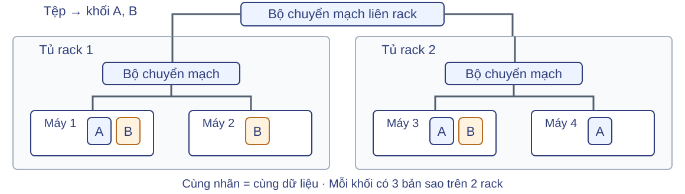
Cục bộ hóa tính toán Ưu tiên máy có khối, rồi máy cùng rack, rồi rack khác.
Chịu lỗi nhờ bản sao Mất một máy hoặc một rack vẫn còn A và B; HDFS sao chép lại bản thiếu.
Rack là tủ máy trong phòng máy; switch là bộ chuyển mạch nối các máy và các rack với nhau.
Ví dụ tệp gồm 2 khối, mỗi khối 3 bản sao chỉ mang tính minh họa.
HDFS cung cấp vị trí khối cho hệ thống thực thi chọn nơi chạy tác vụ; HDFS không tự lập lịch tính toán. Máy có bản sao đọc tại chỗ; nếu phải đọc máy khác cùng rack, dữ liệu qua bộ chuyển mạch của rack; đọc rack khác dùng cả đường nối liên rack. Ưu tiên này còn phụ thuộc tài nguyên chạy tác vụ. NameNode quản lý vị trí khối, theo dõi tín hiệu hoạt động định kỳ của máy lưu trữ và chỉ đạo sao chép lại từ bản sao còn tốt khi thiếu bản sao và có đủ tài nguyên. Bản sao chiếm thêm dung lượng và việc tạo lại cũng dùng băng thông. Mỗi khối chỉ được xử lý một lần trong ví dụ cộng; không cộng lặp các bản sao.
Lỗi một rack không đồng nghĩa mọi hệ thống luôn sẵn sàng; chi tiết metadata nằm ngoài phạm vi hình.
Nguồn: https://hadoop.apache.org/docs/current3/hadoop-project-dist/hadoop-hdfs/HdfsDesign.html (Data Replication, Replica Placement, Moving Computation, Robustness).
Đọc trong máy không truyền mạng; đọc trong cùng rack không dùng đường nối liên rack. Sơ đồ chỉ minh họa mạng và nơi lưu khối.
2. Mô hình tính toán MapReduceMuốn đếm từ trên kho nằm ở nhiều máy, phải đặc tả hai hàm Map, Reduce và phép nhóm theo khóa.
Map · Reduce · Nhóm theo khóa · Các pha · Combine
Dữ liệu đã nằm trên nhiều máy của cụm và HDFS; ví dụ cộng dãy số cho thấy phép tính có thể chia thành phần cục bộ rồi gộp. Bài toán đếm từ dẫn tới hàm Map, hàm Reduce, phép phân phối và nhóm theo khóa, các pha của một công việc và hàm Combine gộp cục bộ. Mô hình hình thức cùng điều kiện dùng Combine được áp vào nhân ma trận–véc tơ, đếm từ phân biệt và trung bình cộng.
Bốn cơ chế của MapReduce
Ba máy nối mạng, mỗi máy lưu một phần dữ liệu Xử lý dữ liệu phân tán Mỗi Map nhận một phần đầu vào.
Ba tác vụ tiến hành đồng thời Tính toán song song Map độc lập; Reduce chạy theo khóa.
Phép tính và dữ liệu nằm trong cùng một máy Tính toán gần dữ liệu Giao Map cho máy giữ khối.
Tác vụ được chuyển từ máy lỗi sang máy khác để chạy lại Điều phối và phục hồi tự động Chạy lại tác vụ máy hỏng.
Kết luận: người lập trình viết hai hàm; hệ thống thực thi.
Mỗi thẻ ghép một yêu cầu của mô hình tính toán với cơ chế MapReduce đáp ứng nó. Mô hình cho phép xử lý dữ liệu phân tán bằng nhiều tác vụ chạy song song, ưu tiên nơi có dữ liệu và giao việc tổ chức thực thi cho hệ thống. Tăng số máy có thể tăng năng lực xử lý, nhưng tốc độ còn phụ thuộc truyền mạng, phân bố dữ liệu và phần không song song hóa được. Phục hồi đòi hỏi còn dữ liệu hoặc bản sao cần thiết và tài nguyên để chạy lại; không có nghĩa chịu được mọi lỗi.
Bài toán đếm từ cho thấy các cơ chế này được thực hiện thế nào.
Nguồn: MMDS mục 2.2 mở đầu, trang 25, và 2.2.5; Dean–Ghemawat 2004, tóm tắt và mục 3.1, 3.3, 3.4.
Bài toán đếm từ
Nhu cầu: kho vượt bộ nhớ một máy; cùng từ ở nhiều máy phải gộp số đếm.
Đầu vào
$n$ văn bản đã tách từ thống nhất; $V$ là tập từ xuất hiện.
Đầu ra
Mỗi $w\in V$ một cặp $(w,c(w))$.
Gọi $c_i(w)$ là số lần từ $w$ xuất hiện trong $d_i$. Với $w\in V$:
$c(w) = \sum_{i=1}^{n} c_i(w)$
Tập văn bản
Mỗi từ một số đếm.
Quy tắc tách từ và chuẩn hóa chữ hoa, dấu câu được coi là đã cố định; bài toán bắt đầu từ các dãy từ. Văn bản $d_i=(w_{i1},\ldots,w_{im_i})$ có $m_i$ từ và $c_i(w)=|\{j: w_{ij}=w\}|$. Tần suất ở đây là số lần xuất hiện, không chia cho tổng số từ; một từ lặp trong cùng văn bản được tính từng lần, nên $c(w)$ không phải số văn bản chứa $w$. Nếu mọi văn bản rỗng thì $V$ rỗng và không có cặp đầu ra. Công thức chỉ mô tả kết quả cần đạt, chưa quy định cách tính. Khó khăn khi dữ liệu lớn là các đóng góp $c_i(w)$ của cùng một từ nằm ở nhiều máy và phải được đưa về một chỗ để cộng.
Nguồn: MMDS §§2.2.1–2.2.3, Ví dụ 2.1–2.2, tr.25–27; ký hiệu được viết lại cho bài này.
Thuật toán: Map và Reduce cho đếm từ
Hàm Map
Đầu vào: văn bản $d_i$; đầu ra: một cặp $(w,1)$ mỗi lần xuất hiện.
Map(d_i):
với mỗi lần từ w xuất hiện trong d_i:
phát(w, 1)
Hàm Reduce
Đầu vào: từ $w$ và danh sách $L_w$; đầu ra: $(w,c(w))$.
Reduce(w, L_w):
c = 0
với mỗi giá trị v trong L_w:
c = c + v
phát(w, c)
Hệ thống gom mọi giá trị cùng từ $w$ vào $L_w$; khóa là từ, giá trị 1 là một lần xuất hiện.
Đầu vào của Map là một văn bản d_i; đầu ra là dãy các cặp (w, 1), giữ nguyên cả các cặp lặp; nếu từ w xuất hiện m lần trong d_i thì có đúng m cặp (w, 1), không gộp trước. Đầu vào của Reduce là cặp (w, L_w) với L_w là danh sách tất cả giá trị 1 ứng với từ w từ mọi tác vụ Map; đầu ra là (w, c(w)) với c(w) là tổng các phần tử của L_w. Nếu w không xuất hiện thì không có nhóm nào cho w và Reduce không được gọi cho w; danh sách rỗng không đi vào bài toán. Tính đúng đắn: vì mỗi lần xuất hiện của w đóng góp đúng một giá trị 1 vào L_w, nên c(w) = tổng theo i của c_i(w), tức tổng số lần xuất hiện của w trên toàn bộ tập văn bản. Giả sử mỗi số đếm vừa một ô nhớ và mỗi phép cộng có chi phí đơn vị. Chi phí trong mô hình đếm: duyệt m_i từ của văn bản d_i ở pha Map, và q_w = |L_w| lần phép cộng cho từ w ở pha Reduce; bộ nhớ tích lũy O(1) vì chỉ giữ một biến đếm, chưa tính chi phí lưu bộ đệm trung gian hay văn bản gốc, và chưa tính chi phí truyền thông giữa các máy.
Nguồn: MMDS, Chương 2, mục 2.2.1–2.2.3. Hàm Map được gọi theo từng văn bản; một tác vụ Map có thể gọi hàm này nhiều lần.
Phân phối tác vụ trên cụm máy
Tiến trình điều phối (Master) giao tác vụ cho máy rảnh, ưu tiên nơi có dữ liệu.
Tác vụ Map
Tác vụ Map 1 · Máy 1
Tác vụ Map 2 · Máy 2
Tác vụ Map 3 · Máy 3
Chuyển và nhóm theo từ:cùng từ thì cùng tác vụ Reduce.
Tác vụ Reduce
Tác vụ Reduce 1 · Máy 1
Tác vụ Reduce 2 · Máy 3
Hình là một cách bố trí minh họa, không phải số liệu hiệu năng. Tiến trình điều phối chia đầu vào thành các phần; mỗi tác vụ Map gọi hàm Map cho từng văn bản trong phần được giao. Các cặp đầu ra được chia theo từ thành các phần dành cho từng tác vụ Reduce. Máy chạy Reduce lấy dữ liệu trực tiếp từ các máy chạy Map; tiến trình điều phối chỉ cung cấp vị trí, không chuyển dữ liệu qua chính nó. Mọi cặp của cùng một từ đến đúng một tác vụ Reduce, nhưng một tác vụ Reduce có thể nhận nhiều từ và gọi hàm Reduce cho từng từ. Một máy có thể nhận cả tác vụ Map lẫn tác vụ Reduce, như Máy 1. Ba cặp khái niệm dễ nhầm: hàm và tác vụ, văn bản và khối dữ liệu, từ và máy vật lý. Khi một máy lỗi, tác vụ của nó được chạy lại trên máy khác; mạch 5 trình bày chi tiết.
Nguồn: Dean, Ghemawat (2004), §§3.1, 3.3, 3.6; MMDS §2.2.
Ví dụ: đếm từ trong hai văn bản
Map: phát (từ, 1)
$d_1$ = "mèo chó mèo"
(mèo, 1)
(chó, 1)
(mèo, 1)
Nhóm theo từ
mèo: $[1, 1]$
chó: $[1, 1]$
chim: $[1]$
Reduce: cộng từng nhóm
(mèo, 2)
(chó, 2)
(chim, 1)
Kiểm tra: $2+2+1=5$ lần.
Chạy từng cặp: d_1 = "mèo chó mèo" phát (mèo, 1), (chó, 1), (mèo, 1); lưu ý mèo xuất hiện hai lần trong cùng một văn bản nên hai cặp (mèo, 1) đều đến từ d_1 và được tính hai lần; d_2 = "chó chim" phát (chó, 1), (chim, 1); chó góp từ cả hai văn bản nên danh sách của nó là [1, 1]. Hệ thống nhóm theo từ cho mèo: [1, 1], chó: [1, 1], chim: [1]; thứ tự các từ không quan trọng, mỗi nhóm chỉ cần giữ đủ các phần tử lặp. Reduce cộng từng nhóm: (mèo, 2), (chó, 2), (chim, 1). Cần phân biệt số lần xuất hiện của từ với số văn bản có chứa từ: mèo xuất hiện 2 lần nhưng chỉ trong 1 văn bản, chó xuất hiện 2 lần trong 2 văn bản. Tổng cộng 5 lần xuất hiện ở đầu vào và đầu ra tổng cũng là 5. Ví dụ do học phần dựng; cơ chế theo MMDS 2.2.1–2.2.3. Hai văn bản d_1 và d_2 trong ví dụ không bắt buộc phải do đúng hai tác vụ Map xử lý; mỗi tác vụ Map có thể xử lý nhiều văn bản.
Nguồn cơ chế: MMDS, Chương 2, mục 2.2.1–2.2.3.
3. Các ví dụ MapReduceMuốn áp mô hình cho bài toán mới, phải chọn khóa và giá trị trung gian đủ để gộp đúng.
Nhân ma trận–véc tơ · Đếm từ phân biệt · Trung bình cộng · Tính đúng
Khung MapReduce và điều kiện dùng Combine đã có. Ba bài toán nhân ma trận–véc tơ, đếm từ phân biệt và trung bình cộng lần lượt được đặc tả, gắn với một ứng dụng trên kho web, viết hàm, chạy tay và chứng minh tính đúng. Ba kiểu giá trị trung gian là tích phần tử, dấu hiệu hiện diện và cặp (tổng, số lượng). Cộng dãy số và đếm từ được dùng lại để đo chi phí khi chạy trên nhiều máy.
Bài toán nhân ma trận–véc tơ
Đầu vào: $A\in\mathbb{R}^{p\times q}$, $v\in\mathbb{R}^q$, với $p,q\geq1$.
Đầu ra: véc tơ $y=Av\in\mathbb{R}^p$, gồm $p$ phần tử:
$y_i=\sum_{j=1}^{q}a_{ij}v_j,\qquad 1\leq i\leq p$
Dữ liệu logic: $pq$ bản ghi $(i,j,a_{ij})$, kể cả phần tử 0.
Giả thiết: $v$ vừa bộ nhớ mỗi tác vụ Map; số học chính xác.
$A$ được chia thành các khối, mỗi khối có bản sao trên nhiều máy; mỗi bản ghi logic góp đúng một lần.
Giả thiết: ma trận p×q, v có q phần tử, y có p phần tử, v vừa RAM, số học chính xác. Nguồn: MMDS 2.3.1 tr.31–32 và bài 2.3.2 tr.40 (ma trận chữ nhật). Nếu ma trận thưa, có thể chỉ lưu các phần tử khác 0; nếu hàng rỗng thì cần quy ước riêng để xuất 0; quy ước đó chưa dùng ở đây. Trường hợp v không vừa RAM (chia dải) là mục 2.3.2, ngoài phạm vi bài.
Điểm tương đồng của trang web với truy vấn
$A$ có $p$ hàng là trang web, $q$ cột là từ; phần tử là trọng số của từ.
$v$ là trọng số của $q$ từ ấy trong truy vấn.
Với các véc tơ khác 0, chuẩn hóa từng hàng của $A$ và $v$ về độ dài Euclid 1.
$y=Av,\qquad y_i=\sum_{j=1}^{q}a_{ij}v_j$
A: p trang × q từ
×
v: truy vấn (q chiều)
=
y: điểm cosin từng trang
Ý nghĩa: $y_i$ là điểm tương đồng cosin của trang $i$ với truy vấn.
Trang web và truy vấn dùng cùng bộ từ và cùng thứ tự tọa độ. Có thể khởi đầu bằng số lần xuất hiện mỗi từ rồi chuẩn hóa; cách đặt trọng số phức tạp hơn nằm ngoài bài. Trọng số bằng 0 nếu từ không xuất hiện. Chỉ xét các véc tơ khác 0 trước khi chuẩn hóa.
Chia từng véc tơ cho độ dài Euclid của nó. Khi hai véc tơ đều có độ dài 1, tích vô hướng bằng cosin của góc giữa chúng. Vì mỗi hàng biểu diễn một trang, phép nhân Av cho tất cả điểm tương đồng với truy vấn. Ma trận số 4×4 ở trang ví dụ sau chưa được chuẩn hóa; \((9, 8, 9, 11)\) không phải điểm cosin.
Mỗi tích \(a_{ij}v_j\) là đóng góp cho trang \(i\); các đóng góp được cộng theo hàng \(i\). Sau đó có thể chọn các trang điểm cao; bước chọn hoặc sắp xếp không nằm trong phép nhân vừa đặc tả. Đây là ứng dụng chấm điểm theo lô, không khẳng định hệ tìm kiếm thực tế chạy toàn bộ MapReduce cho từng truy vấn trực tiếp.
Nguồn: Manning, Raghavan, Schütze, Introduction to Information Retrieval, 6.3.1 và 6.3.2. Tích vô hướng và chuẩn hóa ; Biểu diễn truy vấn bằng véc tơ .
Nhân ma trận–véc tơ theo khối
Ma trận chia thành các khối; mỗi khối có bản sao trên nhiều máy.
Map nhận một khối $B$, duyệt từng bản ghi và tra $v_j$ để tính tích.
Các đóng góp cùng hàng được gom về một khóa.
Máy 1 B1 B2 Máy 2 B2 B3 Máy 3 B3 B1 Ba khối B1, B2, B3; mỗi khối có hai bản sao trong hình. Các bản ghi tọa độ của A được đóng thành khối dữ liệu và lưu phân tán, có nhân bản để chịu lỗi. B1,B2,B3 trong hình là tên khối logic; hai ô cùng tên biểu diễn hai bản sao của cùng dữ liệu, không phải hai đóng góp độc lập. Số bản sao 2 chỉ là minh họa. Một tác vụ Map đọc bản sao phù hợp của phần dữ liệu được giao; ưu tiên gần nơi lưu dữ liệu. Nếu có chạy lại hoặc thực thi dự phòng, hệ thống chỉ nhận một kết quả hợp lệ của tác vụ logic. Khối lưu trữ không mặc định là một hàng; ví dụ chạy tay chia theo hàng để dễ theo dõi. Giả thiết: v vừa RAM; ma trận được chia thành các bản ghi (i, j, a_ij). Nguồn: MMDS 2.1.2 về lưu khối/nhân bản, 2.3.1 về nhân ma trận. Khóa phải là hàng i vì y_i là tổng theo hàng; nếu v không vừa RAM thì phải chia dải theo mục 2.3.2; ngoài phạm vi bài.
Thuật toán: nhân ma trận–véc tơ
Đầu vào: khối $B$ gồm bản ghi $(i,j,a_{ij})$; $v$ có trong bộ nhớ.
Đầu ra: các cặp $(i,y_i)$; $L$ chứa các giá trị cùng hàng.
Map(B):
với mỗi bản ghi (i, j, a_ij) trong B:
yield(i, a_ij * v[j])
Combine(i, L): yield(i, sum(L))
Reduce(i, L): yield(i, sum(L))
Khóa là hàng \( i \); giá trị là tích \( a_{ij} v_j \) hoặc tổng bộ phận của các tích.
Giả thiết: mỗi tọa độ (i, j) xuất hiện đúng 1 lần trong đầu vào, nên mọi tích được góp đủ một lần. Đầu vào hàm Map ở ví dụ này là một khối B, thay cho cách nhận một phần tử trong sách: vòng lặp trong Map(B) tạo cùng các cặp trung gian. yield đưa từng cặp ra mà không kết thúc vòng lặp; không return ngay cặp đầu tiên. Mỗi khối logic được xử lý một lần, không duyệt thêm các bản sao. Chương trình dừng vì mỗi khối có hữu hạn bản ghi; Combine không bắt buộc, nhưng dùng được để cộng cục bộ theo hàng vì phép cộng kết hợp và giao hoán.
Nguồn: MMDS §2.3.1.
Ví dụ: ma trận 4×4 chia bốn khối
Bốn khối $2\times2$: $B_{11},B_{12}$ ở trên; $B_{21},B_{22}$ ở dưới; ma trận chưa chuẩn hóa.
$A=\left[\begin{array}{cc|cc}1&2&0&1\\0&1&2&0\\\hline2&0&1&1\\1&1&0&2\end{array}\right],\quad v=\begin{bmatrix}1\\2\\3\\4\end{bmatrix}$
Bản ghi $(2,3,2)$ → yield(2, 2*3) → $(2,6)$.
Khối Các cặp Map phát Combine phát
$B_{11}$ (1,1), (1,4) (1,5) $B_{12}$ (1,0), (1,4) (1,4) $B_{21}$ (3,2), (3,0) (3,2) $B_{22}$ (3,3), (3,4) (3,7)
Kết luận: Reduce cộng theo hàng: $5+4=9$, $2+6=8$, $2+7=9$, $3+8=11$; $y=(9,8,9,11)^T$.
Ví dụ chọn \(p=q=4\) để minh họa bốn khối \(2\times2\); đặc tả tổng quát vẫn là ma trận \(p\times q\), không đòi vuông. \(B_{11}\) chứa hàng 1–2, cột 1–2; \(B_{12}\) hàng 1–2, cột 3–4; \(B_{21}\) hàng 3–4, cột 1–2; \(B_{22}\) hàng 3–4, cột 3–4. Chỉ số \(i,j\) trong bản ghi là chỉ số toàn cục, không đánh lại từ 1 trong từng khối; mỗi khối có thể có nhiều bản sao vật lý nhưng chỉ góp một lần.
Mỗi khối được giao cho một tác vụ Map, nên Combine tạo hai tổng bộ phận, mỗi tổng cho một hàng; bỏ Combine thì kết quả vẫn đúng. Bảng giữ đủ 16 cặp, kể cả giá trị 0. Sau Combine, Reduce nhận \(L_1=[5,4]\), \(L_2=[2,6]\), \(L_3=[2,7]\), \(L_4=[3,8]\) và phát \((1,9)\), \((2,8)\), \((3,9)\), \((4,11)\); tính trực tiếp từng hàng của \(Av\) cho cùng bốn số. Mỗi hàng nhận đóng góp từ hai khối; khóa hàng \(i\) gom đủ các đóng góp.
Nguồn: MMDS §2.3.1 và Bài 2.3.2; ma trận \(4\times4\) và cách chia khối là dữ kiện do học phần dựng.
Tính đúng: nhân ma trận–véc tơ
Mệnh đề. Với mọi hàng $1\leq i\leq p$, đầu ra bằng $y_i=\sum_{j=1}^{q}a_{ij}v_j$.
Mỗi tọa độ thuộc đúng một khối; Map phát mỗi tích $a_{ij}v_j$ đúng một lần.
Khóa $i$ gom đúng $q$ tích của hàng $i$, giữ cả tích 0.
Combine bảo toàn tổng (cộng kết hợp, giao hoán), nên Reduce trả $y_i$.
Kết luận: cả $p$ hàng đều đúng nên $y=Av$.
Giả thiết: đầu vào mỗi tọa độ 1 lần, số học chính xác. Nguồn: MMDS 2.3.1. Hàng gồm toàn 0 vẫn được xuất vì bản ghi giữ cả phần tử 0. Lưu ý: khi dùng số thực dấu phẩy động, phép cộng thực tế có làm tròn; không khẳng định tính kết hợp của số float.
Bài toán đếm từ phân biệt
Nhu cầu: “mèo chó mèo” và “chó chim” có 2 và 2 từ phân biệt, nhưng toàn kho chỉ có 3.
Đầu vào: $n\geq1$ văn bản $d_1,\ldots,d_n$ đã tách từ nhất quán; $W_i$ là tập từ của $d_i$.
Đầu ra: số từ phân biệt trong toàn bộ các văn bản:
$D=\left|\bigcup_{i=1}^{n}W_i\right|$
Trường hợp biên: mọi văn bản rỗng thì $D=0$.
Giả thiết: n >= 1 văn bản, tách từ nhất quán. Nguồn: MMDS bài tập 2.3.1(d) tr.40, được chuyển từ đếm số nguyên sang đếm token, cùng cơ chế Combine mục 2.2/2.3.5; đây là biến thể dùng để dạy, không phải bài tập nguyên văn. Đếm từ phân biệt khó hơn đếm lượt vì một từ có thể xuất hiện trong nhiều tài liệu; cộng cục bộ sẽ đếm trùng.
Kích thước từ vựng của kho trang web
Biểu diễn kho trang web theo từ: cần biết có bao nhiêu từ khác nhau.
Kho n trang web
→
Từ duy nhất (đại diện)
→
D = q cột
“mèo chó mèo” và “chó chim” có ba từ: mèo, chó, chim.
$D=3\quad\Longrightarrow\quad q=3$ cột
Khi dùng toàn bộ từ vựng của kho, mỗi từ khác nhau tương ứng một chiều.
Ứng dụng nối với ma trận trang–từ đã giới thiệu ở bài nhân ma trận: số từ phân biệt cho số chiều nếu dùng toàn bộ từ vựng sau một quy tắc tách từ nhất quán và không lọc thêm từ. Với hai văn bản, có 5 lần xuất hiện nhưng 3 từ phân biệt. Công việc 1 tạo một đại diện mỗi từ, công việc 2 đếm các đại diện.
Kết quả D chỉ cho số lượng cột; gán từng từ thành chỉ số cột cần thêm một bước, không được thuật toán đếm tự thực hiện. Nếu chọn một tập từ nhỏ hơn để biểu diễn, số cột là kích thước tập đã chọn, không còn nhất thiết bằng D của toàn kho. Đây là ứng dụng dựa trên thuật toán đếm phân biệt và cách biểu diễn tài liệu trong sách IR.
Nguồn: MMDS, bài 2.3.1(d), tr.40; Introduction to Information Retrieval, 6.3.2.
Đếm từ phân biệt bằng hai công việc
Nhu cầu: từ lặp trong và giữa các văn bản; cộng số từ phân biệt cục bộ đếm trùng.
Công việc 1: nhóm theo từ $w$, giữ một cặp $(w,1)$ cho mỗi từ hiện diện.
Công việc 2: đếm các cặp ấy bằng khóa chung $g$.
Từ ở nhiều văn bản Một cặp cho mỗi từ Đếm với khóa chung g $g$ là nhãn cố định để gom số đếm, không phải một từ.
Giả thiết: một từ có thể ở nhiều tài liệu, nên phải loại trùng trước khi đếm. Nguồn: MMDS 2.2, 2.3.5. G chỉ là nhãn; không khẳng định hai công việc là cách cài đặt duy nhất; bài dạy phương án hai công việc.
Phương án hai công việc là cách được dạy, không phải cách duy nhất.
Thuật toán: đếm từ phân biệt
Đầu vào: $n$ văn bản; công việc 2 nhận đầu ra công việc 1.
Đầu ra: $(g,D)$; $L$ là danh sách giá trị cùng khóa, khác rỗng.
Hàm Công việc 1: loại trùng Công việc 2: đếm
Map Với mỗi lần từ $w$ xuất hiện trong $d_i$, phát $(w,1)$. Nhận $(w,1)$, phát $(g,1)$. Combine Nhận $(w,L)$, phát một cặp $(w,1)$. Nhận $(g,L)$, phát $(g,\sum_{v\in L}v)$. Reduce Nhận $(w,L)$, phát một cặp $(w,1)$. Nhận $(g,L)$, phát $(g,\sum_{v\in L}v)$.
Trường hợp biên: không có từ thì chương trình chính (driver) trả 0.
Giả thiết: Công việc 1 chuyển cặp (w, 1) sang Công việc 2; g là nhãn cố định. Nguồn: MMDS 2.2/2.3.5. Chương trình chính (driver) là chương trình gọi lần lượt hai công việc và đọc kết quả; nó khác tiến trình điều phối của hệ thống. Hai vai của Combine khác nhau giữa hai công việc; Công việc 1 giữ sự hiện diện, Công việc 2 giữ tổng; lấy giá trị của công việc 2 làm D, và trả 0 khi nhóm rỗng do điều phối khởi tạo.
Reduce không được gọi với nhóm rỗng; giá trị cuối là $D$.
Ví dụ: đếm từ phân biệt trong hai văn bản
\( d_1 \) = “mèo chó mèo”, \( d_2 \) = “chó chim”.
Bước Dữ liệu
Map phát 5 cặp (mèo,1), (chó,1), (mèo,1) từ d1; (chó,1), (chim,1) từ d2 Combine 1 từng Map d1: mèo 1, chó 1; d2: chó 1, chim 1 Công việc 1 Reduce mèo [1] → mèo 1; chó [1, 1] → chó 1; chim [1] → chim 1 Công việc 2 Map phát (g,1) ba lần → nhóm [1,1,1] → Reduce (g,3)
Kết luận: 3 từ phân biệt, 5 lần xuất hiện; cộng cục bộ \(2+2=4\) sai.
Giả thiết: cùng dữ liệu ví dụ của bài; Map 1 nhận d1, Map 2 nhận d2. Nguồn: ví dụ số tự chọn theo đặc tả. Chó hiện ở cả hai tài liệu nhưng chỉ được đếm một lần vì Công việc 1 đã phát đúng 1 cặp mỗi từ; câu kết nêu 3 từ phân biệt khác 5 lần xuất hiện.
Công việc 2 trong ví dụ không dùng Combine.
Tính đúng: đếm từ phân biệt
Mệnh đề. Giá trị cuối bằng \( D \).
Mỗi từ xuất hiện có cặp Map; công việc 1 giữ đúng một cặp \( (w,1) \).
Từ không xuất hiện không sinh cặp.
Công việc 2: mỗi cặp góp một số 1 vào \( g \), nên giá trị cuối là \( D \).
Trường hợp biên: mọi văn bản rỗng thì không có cặp; trả 0.
Giả thiết: Công việc 1 đầu vào gồm mọi cặp (w, 1) từ Map; nhóm rỗng không gọi Reduce nên cần khởi tạo 0 từ chương trình chính. Nguồn: MMDS 2.2/2.3.5. Bất biến then chốt là "đúng một cặp cho mỗi từ khác nhau"; mọi bước sau chỉ đếm các cặp này.
Đầu ra công việc 1 tương ứng một–một với các từ khác nhau. Combine 1 giữ sự hiện diện (loại trùng), Combine 2 giữ tổng.
Bài toán trung bình cộng
Nhu cầu: [2, 4] có trung bình 3, [9] có trung bình 9; trung bình của 3 và 9 là 6, của cả dãy là 5.
Đầu vào: dãy $a_1,\ldots,a_n\in\mathbb{R}$, với $n\geq1$.
Đầu ra: trung bình cộng của toàn bộ dãy:
$\mu=\frac{1}{n}\sum_{i=1}^{n}a_i$
Giả thiết: số học chính xác; dãy rỗng không có trung bình.
Bài tập MMDS dùng số nguyên; mở rộng sang số thực giữ nguyên thuật toán. Trung bình của các trung bình bỏ mất kích thước nhóm: nhóm [2, 4] có hai phần tử nhưng được tính như nhóm [9] một phần tử.
Dữ liệu được chia theo vị trí: hai phần tử bằng nhau vẫn là hai đóng góp.
Nguồn: MMDS, Bài 2.3.1(b), tr.40.
Số từ trung bình mỗi trang
Với $n\geq1$ trang web, $a_i$ là số từ của trang $i$, tính cả từ lặp.
Hai trang “mèo chó mèo” và “chó chim” có lần lượt 3 và 2 từ.
3 từ và 2 từ
→
Tổng = 5; số trang = 2
→
2,5 từ / trang
$\mu=\frac{3+2}{2}=2{,}5$ từ/trang
Cần biết cả tổng số từ và số trang trước khi chia.
Đây là thống kê mô tả độ dài văn bản trong kho. Mọi trang dùng cùng quy tắc tách từ; \(a_i\) là số lần xuất hiện từ, không phải số từ phân biệt. Phép chia cần tổng toàn kho và số trang toàn kho; mỗi máy chỉ biết phần của mình, nên phải gộp cả hai số trước khi chia. Trang rỗng vẫn là một trang và góp 0 từ; bỏ nó làm sai mẫu số. Kho không có trang nào thì trung bình không xác định.
Nguồn: ứng dụng của MMDS, Bài 2.3.1(b), tr.40.
Trạng thái tổng và số lượng
Trung bình từng phần bỏ mất kích thước: [2, 4] có 2 phần tử, [9] có 1.
Giữ trạng thái \( (s,c) \) với \( s \) là tổng, \( c \) là số lượng.
Trạng thái (s, c) Cộng tổng và số lượng Chia tổng cho số lượng Giả thiết: các nhóm có thể kích thước khác nhau, nên phải trọng số theo số lượng. Nguồn: MMDS §2.2.4; Bài 2.3.1(b), tr.40. Trạng thái \((s,c)\) cộng được từng thành phần: \((6,2)\) và \((9,1)\) cho \((15,3)\), rồi \(15/3=5\). Phép cộng từng thành phần có tính kết hợp và giao hoán, nên Combine áp được trên trạng thái này; phép chia chỉ làm một lần ở Reduce.
Thuật toán: trung bình cộng
Đầu vào: $a_1,\ldots,a_n$, $n\geq1$; khóa chung $g$.
Đầu ra: $(g,\mu)$; $L$ là danh sách các trạng thái $(s,c)$.
$S=\sum_{(s,c)\in L}s$, $C=\sum_{(s,c)\in L}c$: cộng từng thành phần, giữ mọi lần lặp.
Hàm Đầu vào → cặp được phát Kiểu giá trị phát
Map $a_i\ \longrightarrow\ (g,(a_i,1))$ Cặp (tổng, số lượng) Combine $(g,L)\ \longrightarrow\ (g,(S,C))$ Cặp (tổng, số lượng) Reduce $(g,L)\ \longrightarrow\ (g,S/C)$ Một số
Kết luận: Combine giữ tổng và số lượng; chỉ Reduce chia.
Giả thiết: g là khóa chung, L là danh sách cặp (s, c); sum trên L là tổng thành phần. Nguồn: MMDS 2.2. Nếu dùng Reduce (phát S/C) làm Combine, các cặp tiếp theo không thể gộp nữa; sai chữ ký và sai ngữ nghĩa. Combine giữ kiểu giá trị trung gian; phép chia chỉ diễn ra tại Reduce cuối.
Ví dụ: trung bình của 2, 4, 9
Map 1 nhận \( [2, 4] \), Map 2 nhận \( [9] \); tổng cộng \( n = 3 \).
Bước Dữ liệu
Map 1 phát (g, (2,1)), (g, (4,1)) → Combine phát (g, (6, 2)) Map 2 phát (g, (9,1)) → Combine phát (g, (9, 1)) Reduce L = [(6, 2), (9, 1)] → S = 15, C = 3 → phát (g, 5)
Kết luận: \( \mu = 15 / 3 = 5 \); Combine chỉ cộng hai thành phần, không chia.
Giả thiết: Map 1 giữ [2, 4], Map 2 giữ [9], khóa chung g. Nguồn: ví dụ số tự chọn theo đặc tả. Nếu chia cục bộ thì thu được trung bình của (3, 9) = 6; sai; cặp (s, c) cho phép Reduce tính đúng 5 với trọng số 2 và 1.
Tính đúng: trung bình cộng
Bất biến: mỗi cặp \( (s,c) \) là tổng và số vị trí gốc của một nhóm phần tử rời nhau.
Khởi tạo Duy trì Kết thúc Map phát \( (a_i,1) \). Gộp nhóm rời nhau: cộng hai thành phần. \( S=\sum_i a_i \), \( C=n>0 \), nên \( S/C=\mu \).
Kết luận: có hay không Combine, kết quả không đổi.
Giả thiết: số thực chính xác, n >= 1. Nguồn: MMDS 2.2 và bài tập 2.3.1(b). Chứng minh quy nạp ngắn; bất biến đúng ở cơ sở (a_i, 1), và mỗi lần gộp hai nhóm rời nhau giữ bất biến; Reduce cuối nhận các nhóm bao trùm toàn bộ dãy, nên s = tổng, c = n > 0, μ = s/c. Chương trình kết thúc hữu hạn vì số cặp hữu hạn. Lưu ý: float thực tế có làm tròn, không khẳng định tính kết hợp của float.
Mọi phép gộp chỉ cộng trên nhóm rời nhau và số học chính xác, nên tổng và số vị trí được bảo toàn.
Câu hỏi về ba ví dụ
Câu hỏi:
Trong nhân ma trận–véc tơ, vì sao khóa là hàng \( i \) chứ không phải cột \( j \)?
Với \( d_1 \) = “mèo chó mèo”, \( d_2 \) = “chó chim”: cộng số từ phân biệt từng văn bản có ra số toàn bộ không?
Có thể dùng Reduce của bài trung bình làm Combine không? Nếu không, cần giữ gì?
Lời giải: (1) khóa hàng i vì y_i là tổng các tích theo hàng i; các tích cùng hàng phải về chung một khóa để được cộng thành y_i, còn cột j không ứng với thành phần nào của kết quả. (2) Không: cộng số từ phân biệt cục bộ cho 2 + 2 = 4, nhưng chó bị đếm hai lần; số từ phân biệt đúng là 3. (3) Không: Reduce phát S/C (một số) nên các cặp sau không gộp được; Combine cần giữ cặp (s, c) và chỉ cộng hai thành phần. Ví dụ dãy 2, 4, 9: lấy trung bình của 3 và 9 cho 6 (không trọng số; sai), còn trung bình có trọng số đúng là 5.
Nguồn: MMDS §2.3.1; Bài 2.3.1(b, d), tr.40.
4. Chi phí và lợi ích của song song hóaMuốn biết thêm máy có rút ngắn thời gian hay không, phải đếm công việc, thời gian từng pha và lượng truyền.
Tổng công việc · Thời gian hoàn thành · Lượng truyền · Combine · Mức tăng tốc
Các hàm của ba ví dụ đã được đặc tả và chứng minh đúng. Tổng công việc được đếm trên phép cộng 16 số; thời gian của một pha và của cả công việc trên $P$ máy, chi phí đầu vào tác vụ, thời gian truyền với băng thông riêng và dùng chung, lượng truyền giảm nhờ Combine, rồi mức tăng tốc. Chi phí tính toán, truyền và điều phối được tách riêng; cơ chế tạo ra chúng nằm ở hệ thống thực thi.
Ba đại lượng chi phí
Nhu cầu: so sánh các cách chạy trên nhiều máy.
Ký hiệu: \(P\) là số máy giống nhau; \(p\) vẫn là số hàng ma trận.
Các ví dụ vừa học đã cho cách chọn khóa, giá trị và viết các hàm. Nay dùng hai ví dụ quen thuộc là cộng dãy số và đếm từ để đánh giá hiệu quả khi chạy trên nhiều máy. W đếm tổng phép toán; T_P đo thời gian hoàn thành; V đếm số byte qua đường truyền đang xét. Ba đại lượng có đơn vị khác nhau. Trong mạch này dùng P cho số máy, phân biệt với p số hàng ma trận. Nguồn: MMDS 2.5, trang 53–56.
Ví dụ: số phép cộng khi cộng 16 số
Đếm số phép cộng; khởi tạo tổng bằng phần tử đầu.
a₁ a₂ a₃ … a₁₆
1 máy: 15 phép cộng
a₁…a₄
a₅…a₈
a₉…a₁₂
a₁₃…a₁₆
Bốn máy: 4 × 3 = 12 phép cộng
gộp 4 tổng: 3 phép cộng
tổng: 15 phép cộng
Kết luận: bốn máy vẫn làm \(4\cdot3+3=15\) phép cộng, bằng một máy.
Một máy cộng 16 số cần 15 phép cộng. Chia đều cho 4 máy: mỗi máy cộng 4 số bằng 3 phép cộng; gộp 4 tổng cục bộ bằng 3 phép cộng nữa. Tổng công việc là 4×3+3=15. Khởi tạo bằng phần tử đầu tiên, nên nhóm một phần tử không cần phép cộng. Giả thiết n và P nguyên dương, n chia hết cho P, P≤n, số học chính xác; chỉ đếm phép cộng, bỏ chi phí khác. Ví dụ tự chọn minh họa cách đếm công việc, không phải đo hiệu năng. Liên hệ phân biệt tổng chi phí và thời gian ở MMDS 2.5.
Nguồn: MMDS §2.5.1.
Chi phí: cộng một dãy số
Mô hình: chỉ đếm phép cộng; khởi tạo tổng bằng phần tử đầu.
Bước Số lần Chi phí mỗi lần Đóng góp
Cộng cục bộ \(P\) máy \(n/P-1\) \(P(n/P-1)\) Gộp tổng cục bộ 1 \(P-1\) \(P-1\) Tổng \(W_P=n-1\)
Giả thiết: \(n\geq P\geq1\), \(P\) chia hết \(n\), số học chính xác.
Mỗi máy nhận \(n/P\) số và cộng chúng bằng \(n/P-1\) phép cộng vì tổng được khởi tạo bằng phần tử đầu; bước gộp cộng \(P\) tổng cục bộ bằng \(P-1\) phép cộng. Tổng \(P(n/P-1)+(P-1)=n-P+P-1=n-1\), không phụ thuộc \(P\). Với \(n=16\), \(P=4\): \(4\cdot3+3=15=n-1\), bằng số phép cộng trên một máy. Song song hóa không giảm tổng công việc; nó chỉ chia công việc cho nhiều máy. Nếu khởi tạo tổng bằng 0, mỗi máy cộng thêm một lần và số đếm phải làm lại.
Nguồn: MMDS §2.5.1.
Chi phí: thời gian của một pha
Mô hình: mọi tác vụ sẵn sàng từ 0; mỗi máy chạy lần lượt, không nghỉ, không lỗi.
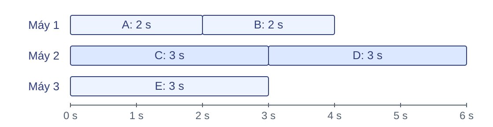
Gọi \(t_m\) là tổng thời gian các tác vụ giao cho máy \(m\).
\( T_{\text{pha}} = \max_m t_m = \max(4,\,6,\,3) = 6\,\text{s} \)
Các tác vụ đều sẵn sàng từ thời điểm 0; mỗi máy chạy từng tác vụ nối tiếp không nghỉ và không lỗi. Tổng tải máy 1 là 2+2=4 giây; máy 2 là 3+3=6 giây; máy 3 là 3 giây. Pha chỉ hoàn thành khi máy 2 xong, nên thời gian là max(4,6,3)=6 giây. Một tác vụ dài nhất chỉ mất 3 giây nhưng máy 2 phải chạy hai tác vụ như vậy. Nếu có khoảng chờ do phụ thuộc dữ liệu hoặc tài nguyên, phải đưa khoảng chờ vào lịch; không tự áp dụng công thức chỉ cộng thời gian tác vụ. Đây là ví dụ giả định cụ thể hóa nhu cầu cân bằng tải trong MMDS 2.5.2, trang 55–56.
Nguồn: MMDS §2.5.2, tr.55–56; dữ kiện giả định.
Ví dụ: thời gian cộng 16 số trên bốn máy
\(\tau>0\): thời gian một phép cộng; mỗi máy nhận 4 số.
Mô hình: hai pha nối tiếp; bỏ đọc ghi, truyền, điều phối.
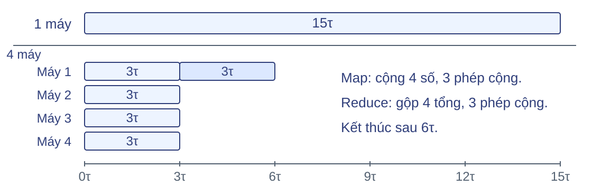
\(T_{\text{Map}}=3\tau,\qquad T_{\text{Reduce}}=3\tau\)
Giả thiết: dữ liệu đã nằm tại mỗi máy; một tác vụ Reduce gộp tuần tự bốn tổng.
Map: mỗi máy cộng 4 số, mất 3 phép cộng; Reduce: một máy cộng 4 tổng, mất 3 phép cộng; đây là ví dụ dùng cộng cục bộ trong Map (gộp cục bộ đã học). Dùng lại 16 số, chia 4 số cho mỗi máy. Cả bốn máy cộng cục bộ đồng thời trong 3τ; sau đó máy 1 gộp bốn tổng trong 3τ. Công việc kết thúc tại 6τ; không gọi khoảng từ 6τ đến 15τ là thời gian nhàn rỗi của công việc đã xong. Tổng số phép cộng vẫn là 15. Với n số chia đều cho P máy và một máy gộp tuần tự, T_P=(n/P−1)τ+(P−1)τ. Giả thiết số học chính xác, τ>0 không đổi, khởi tạo tổng bằng phần tử đầu, dữ liệu đã nằm trên máy; bỏ thời gian đọc/ghi, truyền và điều phối. Công thức này đánh giá cách gộp tuần tự đang minh họa; gộp theo cây có lịch khác. Với P=1, thu được (n−1)τ; với n=P, phần cục bộ không cần cộng.
Nguồn: MMDS §2.5.2; dữ kiện tự chọn.
Chi phí: tổng đầu vào tác vụ
Nhu cầu: so hai cách tổ chức tác vụ theo lượng dữ liệu đọc.
Mô hình: chi phí tác vụ là kích thước đầu vào; \(C\) là tổng mọi tác vụ.
\(I\) là tổng dữ liệu gốc các Map đọc; \(H\) là tổng dữ liệu trung gian các Reduce nhận.
\( C = I + H = 100 + 40 = 140\,\text{MB} \)
Giả thiết: một công việc, không chạy lại; Combine nằm trong Map.
Khi có nhiều cách tổ chức cùng bài toán, \(C\) là quy ước thống nhất để so sánh lượng dữ liệu mà các tác vụ phải đọc. Quy ước MMDS 2.5.1 (trang 54): chi phí một tác vụ là kích thước đầu vào của nó; chi phí thuật toán là tổng trên tất cả tác vụ. I là tổng dữ liệu gốc được các tác vụ Map đọc, H là tổng dữ liệu trung gian chuyển vào các tác vụ Reduce, C là tổng hai phần, đơn vị MB. Với giả thiết một công việc và Combine nằm trong Map, giả sử không có tác vụ chạy lại, C = I + H = 100 + 40 = 140 MB. Nếu một dữ liệu được đọc bởi nhiều tác vụ, tính đầu vào của mỗi tác vụ. C gồm cả đọc tại máy; đầu ra trung gian được tính khi đi vào Reduce, không cộng lần hai; đầu ra cuối không được tính theo quy ước này (hình đã ghi chú). C chưa cho biết thời gian hoàn thành: còn cần tốc độ xử lý, cách giao tác vụ và băng thông; trang chiếu MMDS 38–40 và Stanford CS246 67–70 dùng tổng đọc/ghi, cho I+2H+O; đó là quy ước khác. Các số 100 và 40 MB chỉ minh họa. MMDS gọi đại lượng này là chi phí truyền thông (communication cost).
Nguồn: MMDS §2.5.1, tr.54.
Chi phí: thời gian truyền một thông điệp
Mô hình: \(V\) là lượng truyền (MB), \(B\) là băng thông (MB/s), \(\lambda\) là độ trễ khởi đầu (giây).
Thông điệp
V = 100 MB
1 đường truyền
B = 50 MB/s
λ = 0,02 s
Máy nhận
chờ 2,02 s
Thời gian truyền \(T\) gồm độ trễ khởi đầu và thời gian chuyển \(V\) với tốc độ \(B\):
\( T \approx \lambda + \dfrac{V}{B} = 0{,}02 + \dfrac{100}{50} = 2{,}02\,\text{s} \)
Giả thiết: một thông điệp, băng thông ổn định; 1 MB là \(10^6\) byte.
C đếm đầu vào, nhưng để ước tính thời gian truyền cần lượng dữ liệu thực sự đi qua đường truyền đang xét; đó là V. Mô hình: thời gian truyền xấp xỉ λ + V/B, với λ là thời gian khởi đầu trước khi dữ liệu bắt đầu tới (hình cho thấy λ = 0,02 s trước luồng 100 MB), V = 100 MB là số byte trên đường, B = 50 MB/s nghĩa là mỗi giây chuyển được 50 MB. Như vậy 100 MB cần 2 giây để truyền, cộng thêm 0,02 giây khởi đầu là 2,02 giây. Nguồn Cornell dùng α+βM với β là nghịch đảo băng thông; đổi tên thành λ để không trùng chữ L của Reduce. Giả thiết một thông điệp truyền riêng, băng thông ổn định; chưa xét tranh chấp, chồng lấp hay truyền lại. Quy ước 1 MB = 10⁶ byte; phân biệt MB và Mb. Nguồn: https://www.cs.cornell.edu/courses/cs5220/2020fa/lec/2020-10-06-intro.html, mục mô hình alpha–beta.
Chi phí: đường nối dùng chung
100 MB/s là băng thông của cả đường nối dùng chung: nhiều máy cùng gửi thì phải chia sẻ.
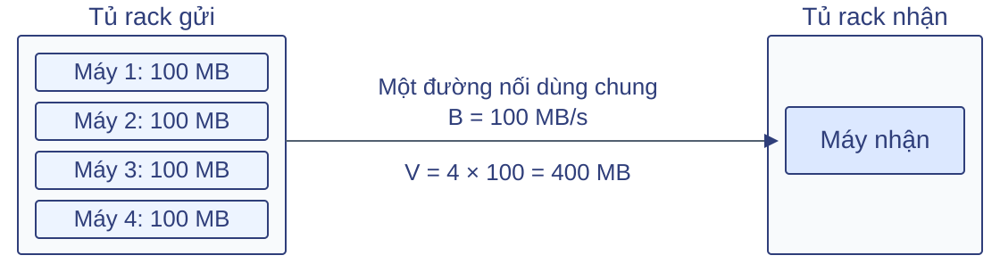
\( T \geq \dfrac{V}{B} = \dfrac{400}{100} = 4\,\text{s} \)
T là thời gian chuyển đủ 400 MB: cần ít nhất 4 giây, chưa kể độ trễ.
Kết luận: xử lý gần dữ liệu giảm số byte qua đường nối này.
Con số 100 MB/s là băng thông của cả đường nối dùng chung, không phải của mỗi máy. Bốn máy mỗi máy gửi 100 MB, tất cả phải đi qua cùng một đường nối sang rack khác, nên V = 4 × 100 = 400 MB như hình. Dù bốn máy gửi đồng thời, đường nối vẫn phải chuyển đủ 400 MB, vì thế thời gian chuyển đủ dữ liệu \(T\) ít nhất là V/B = 4 giây. Đây là cận dưới: độ trễ, tranh chấp khác và chi phí xử lý có thể làm lâu hơn, nên không nói chắc chắn 4 giây. Hệ quả thực hành: chuyển xử lý tới gần dữ liệu (cùng rack chứa dữ liệu) làm giảm số byte phải đi qua đường nối, nhờ đó giảm áp lực băng thông. Vị trí dữ liệu không tự làm mất việc đọc và xử lý tại máy. Nguồn: MMDS 2.1.1, trang 22–23; cấu hình và con số là ví dụ giả định.
Chi phí: lượng truyền khi có Combine
\( d_1 \) = “mèo chó mèo”, \( d_2 \) = “chó chim”.
Phương án Cặp đi qua đường truyền V (mỗi cặp 16 byte)
Không Combine d₁: (mèo,1), (chó,1), (mèo,1) 5 × 16 = 80 byte Có Combine d₁: (mèo,2), (chó,1) 4 × 16 = 64 byte
Kết luận: lượng truyền giảm từ 80 còn 64 byte (20%), đổi lại Map cộng thêm.
Giả thiết: mỗi văn bản một Map; mỗi cặp 16 byte, qua đường truyền một lần.
Thay vì gửi từng lần xuất hiện, Map gộp các lần xuất hiện cùng từ ngay tại chỗ, nhờ đó gửi đi ít cặp hơn qua đường truyền. Dùng lại hai văn bản, mỗi văn bản một tác vụ Map. Không Combine có 5 cặp; có Combine thì văn bản thứ nhất còn (mèo,2),(chó,1), văn bản thứ hai còn (chó,1),(chim,1): tổng 4 cặp. Với giả thiết mỗi cặp 16 byte và mọi cặp đi qua đường truyền đang xét đúng một lần (không tính phần đầu gói), lượng truyền giảm từ 80 xuống 64 byte, tức 20%. Giảm 20% lượng truyền nhưng thêm phép cộng tại Map; thời gian toàn công việc quyết định có lợi hay không. Về C: số từ phải đọc không đổi nên I giữ nguyên; H giảm nên C = I + H cũng giảm. Nếu không có từ lặp trong từng tác vụ, Combine này không giảm số cặp. Phép cộng số đếm thỏa điều kiện kết hợp, giao hoán và giữ kiểu trung gian đã học. Nguồn: MMDS 2.2.4, trang 27–28 và 2.5.1, trang 54; 16 byte/cặp là quy ước minh họa.
Chi phí: thời gian của cả công việc
\(T_P\) là thời gian từ lúc bắt đầu đến khi có đủ kết quả trên \(P\) máy.
Ví dụ giả định, \(P=4\): bốn pha điều phối, Map, truyền và nhóm, Reduce.
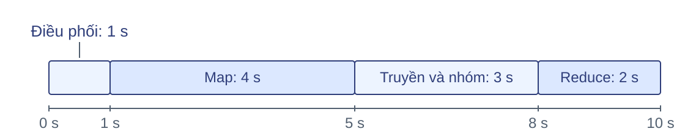
\( T_P = 1+4+3+2 = 10\,\text{s} \)
Mô hình: mỗi pha kết thúc khi máy cuối cùng xong; các pha nối tiếp, không lỗi.
$T_P$ là thời gian hoàn thành của cả công việc trên $P$ máy, khác với tổng công việc $W$. Các mốc được đọc trực tiếp từ hình: điều phối 0–1 giây, Map 1–5, truyền và nhóm 5–8, Reduce 8–10. Thời gian một pha là thời gian chờ máy chậm nhất của pha đó xong, không phải tổng thời gian làm việc của mọi máy. Đọc đầu vào được tính trong Map, truyền và sắp xếp trong pha giữa, ghi đầu ra trong Reduce. Các số 1, 4, 3, 2 giây là dữ kiện giả định, không suy ra từ ví dụ cộng 16 số và không phải số đo. Hệ thống thật cho các pha chồng lấp một phần; khi đó cần một mô hình chi tiết hơn.
Nguồn: mô hình pha theo MMDS §2.2.2 và §2.5.2; thời gian là dữ kiện giả định.
Mức tăng tốc
Mức tăng tốc \(S_P\) là tỷ số \(T_1/T_P\), với \(T_1\) là thời gian trên một máy.
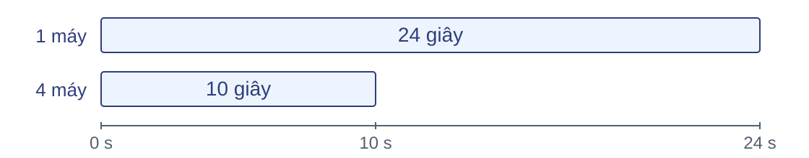
\( S_P = \dfrac{T_1}{T_P}, \qquad S_4 = \dfrac{24}{10} = 2{,}4 \)
Kết luận: với dữ kiện này, bốn máy nhanh hơn một máy 2,4 lần.
Giả thiết: cùng đầu vào, cùng đầu ra, cùng phạm vi đo thời gian.
Có \(T_P\) của cả công việc thì so được với một máy để biết thêm máy có đáng không. Định nghĩa: T₁ là thời gian chạy trên 1 máy, T_P là thời gian chạy trên P máy, S_P = T₁/T_P là số lần tăng tốc. Hình minh họa: cùng một công việc, 1 máy mất 24 giây, 4 máy mất 10 giây (đúng như lịch vừa tính), nên S₄ = 24/10 = 2,4 lần. Thêm máy có lợi về thời gian khi \(T_P<T_1\). Chi phí truyền, gộp, điều phối và việc chia tải không đều có thể khiến thời gian không giảm tỷ lệ với số máy. Lưu ý giữ cùng đầu vào, đầu ra và phạm vi đo khi so sánh; đây là dữ kiện minh họa, không phải đo trên cụm máy thực. Nguồn: https://www.cs.cornell.edu/courses/cs5220/2020fa/lec/2020-09-08-perf-basics.html.
Câu hỏi về thời gian và mức tăng tốc
Đại lượng Dữ kiện
Điều phối 1s Thời gian Map mỗi máy 2s / 3s / 5s Lượng truyền V 120 MB Băng thông B 40 MB/s Reduce 2s Tuần tự T₁ 22s
Giả thiết: các pha nối tiếp; bỏ độ trễ, chi phí nhóm.
Câu hỏi:
Tính TMap và Ttruyền .
Tính TP và SP .
Combine giảm V còn 40 MB, Map tăng 1 s: tính T′P và thời gian tiết kiệm.
\(T_P\) là thời gian từ khi bắt đầu đến khi nhận đủ kết quả trên P máy (đây P = 3), S_P là số lần tăng tốc so với 1 máy. Dữ kiện "tải Map 2s/3s/5s" là tổng thời gian các tác vụ Map trên từng máy; T_Map là thời gian chờ pha Map hoàn tất, tức máy chậm nhất. Lời giải: T_Map = max(2,3,5) = 5 giây; bỏ độ trễ và chi phí nhóm nên truyền mất 120/40 = 3 giây; T_P = 1+5+3+2 = 11 giây; S_P = 22/11 = 2 lần. Câu 3: pha Map tăng từ 5 lên 6 giây, V còn 40 MB nên truyền mất 1 giây; T′_P = 1+6+1+2 = 10 giây, tiết kiệm 1 giây so với 11 giây; S′_P = 22/10 = 2,2 lần. Lợi ích ròng: bớt 2 giây truyền, thêm 1 giây Map. Sai lầm thường gặp: cộng tải ba máy để tính T_Map, hoặc bỏ quên pha điều phối.
Nguồn: mô hình theo MMDS §§2.5.1–2.5.2; dữ kiện giả định.
5. Hệ thống thực thi MapReduceMuốn hiểu thời gian chạy và cách phục hồi, phải theo dữ liệu từ phần đầu vào qua Shuffle tới Reduce.
Phần đầu vào · HDFS · Hàm phân phối · Shuffle · Phục hồi khi máy hỏng
Mô hình chi phí đã tách thời gian tính toán, truyền và điều phối. Các chi phí ấy sinh ra từ cơ chế thực thi: phần đầu vào sinh tác vụ Map, HDFS cho vị trí bản sao, hàm phân phối chia đầu ra Map, Shuffle và nhóm theo khóa đưa dữ liệu tới Reduce, tiến trình điều phối theo dõi trạng thái và chạy lại tác vụ khi máy hỏng. HDFS và tiến trình điều phối xuất hiện lại trên cụm Hadoop thực hành, nhưng bài thực hành không đòi hỏi các cơ chế này. Ba nhiệm vụ của hệ thống: giao việc (chọn máy, tận dụng vị trí dữ liệu), chuyển dữ liệu (đưa phần trung gian tới đúng Reduce) và phục hồi (phát hiện lỗi, làm lại phần kết quả bị mất).
Phần đầu vào và tác vụ Map
Đọc thêm
Nhu cầu: thời gian chạy phụ thuộc cách giao tác vụ và chuyển dữ liệu.
Phần đầu vào (InputSplit) xác định dữ liệu một tác vụ Map phải đọc.
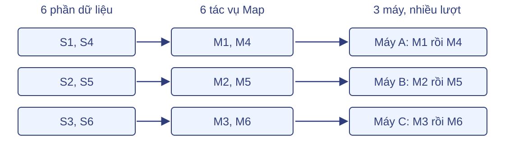
Lưu ý: phần đầu vào là đơn vị chia việc; khối HDFS là đơn vị lưu trữ.
Một tác vụ Map xử lý phần đầu vào được giao. Với Hadoop, InputFormat tạo các InputSplit và RecordReader đưa các bản ghi trong phần đó tới Map. Sáu phần S1 đến S6 tạo sáu tác vụ, dù chỉ có ba máy thực thi. Khi máy rảnh, nó có thể nhận tác vụ tiếp theo. Ví dụ minh họa một tác vụ mỗi máy mỗi lượt, không phải giới hạn của mọi hệ thống. Số Reduce được cấu hình riêng. Không suy số Map chỉ từ số máy hoặc mặc định một khối luôn là một phần đầu vào. Nguồn: MMDS 2.2.5; Apache Hadoop MapReduce Tutorial, Job Input.
Vai trò của HDFS trong MapReduce
Đọc thêm
Hệ thống tệp phân tán Hadoop (HDFS) cung cấp lớp lưu trữ cho đầu vào và kết quả.
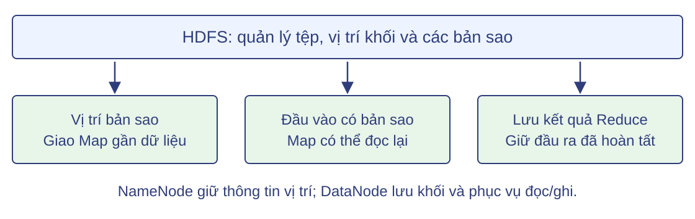
HDFS quản lý dữ liệu. Hệ thống MapReduce phân chia, lập lịch và chạy lại tác vụ.
HDFS chia tệp thành khối và lưu các bản sao theo cấu hình. NameNode quản lý thông tin tệp và vị trí khối; DataNode giữ khối và phục vụ đọc ghi. MapReduce dùng thông tin vị trí để ưu tiên chạy Map gần một bản sao. Khi phải chạy lại Map, hệ thống còn đầu vào để đọc nếu một bản sao khác vẫn truy cập được. Kết quả Reduce đã hoàn tất cũng được lưu trên HDFS, nên mất máy tính toán không đồng nghĩa mất kết quả. Đầu ra Map trung gian trong mô hình đang học nằm trên đĩa cục bộ, không tự được bảo vệ như tệp HDFS. Nguồn: MMDS 2.1.2, 2.2.5; https://hadoop.apache.org/docs/r3.4.2/hadoop-project-dist/hadoop-hdfs/HdfsDesign.html.
Giao tác vụ Map gần dữ liệu
Đọc thêm
Ưu tiên máy có bản sao; nếu không phù hợp, xét máy cùng rack rồi xa hơn.
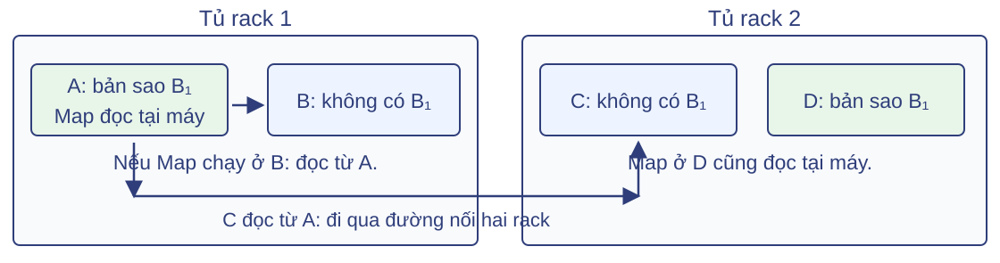
A và D đều đọc được B₁ tại máy; bản sao không làm tăng số bản ghi đầu vào.
Trong hình, A và D giữ hai bản sao của cùng khối B1. Nếu Map chạy tại một trong hai máy này, nó đọc cục bộ. Map ở B đọc từ A qua mạng trong rack 1. Theo quy tắc ưu tiên, Map ở C đọc bản ở D cùng rack 2; nhãn "C đọc từ A" trong hình là trường hợp bản ở D không dùng được, khi đó dữ liệu đi qua đường nối giữa hai rack. Bộ lập lịch cân nhắc vị trí và tài nguyên sẵn có, không bảo đảm mọi Map đều đọc cục bộ. Dữ liệu có bản sao không có nghĩa đếm cùng một phần nhiều lần: bản sao thuộc lưu trữ, tác vụ thuộc tính toán. Nguồn: MMDS 2.1.2 và 2.2.5; Dean–Ghemawat 3.4.
Chia đầu ra Map theo hàm phân phối
Đọc thêm
Hai văn bản, hai Map, hai Reduce; tạm bỏ Combine để thấy từng cặp.
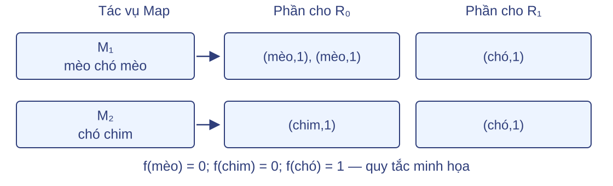
Mỗi Map lưu các phần trung gian trên đĩa cục bộ.
Dùng lại d1 gồm mèo chó mèo và d2 gồm chó chim. Quy tắc phân phối minh họa là \(p(\text{mèo})=0\), \(p(\text{chim})=0\), \(p(\text{chó})=1\); hình ghi \(f\), chính là hàm phân phối \(p\) của mạch mô hình. Mọi Map dùng cùng quy tắc, nên cặp cùng khóa đi tới cùng Reduce. Một Map chia đầu ra thành \(r\) phần, \(r\) là số tác vụ Reduce; đây là các phần logic, không khẳng định Hadoop tạo đúng \(r\) tệp vật lý riêng biệt. Tiến trình điều phối nhận vị trí và kích thước các phần để báo cho Reduce; nó giữ thông tin vị trí, không thu toàn bộ dữ liệu trung gian về nó, và mỗi Reduce dùng những vị trí đó để lấy phần của mình. Nguồn: MMDS 2.2.5; Dean–Ghemawat 3.1.
Chuyển dữ liệu trung gian (Shuffle)
Đọc thêm
Việc chuyển các phần trung gian tới tác vụ Reduce đã chỉ định gọi là Shuffle.
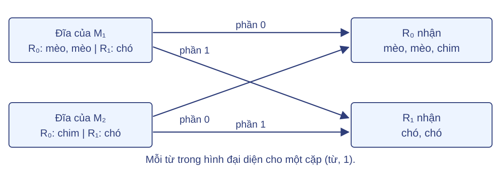
R₀ nhận nhiều khóa; mọi cặp cùng khóa vẫn về cùng một Reduce.
R0 lấy phần 0 từ M1 và M2; R1 lấy phần 1 từ cả hai. Đây là bước truyền dữ liệu qua mạng giữa các máy nếu bên gửi và nhận không cùng máy. Có nhiều khóa thuộc một Reduce nên lấy đủ dữ liệu chưa thay thế bước nhóm theo khóa. Việc lấy dữ liệu có thể bắt đầu khi một số Map khác còn chạy. Trong Hadoop, lấy và ghép dữ liệu có thể chồng lấp; mô hình cộng thời gian các pha nối tiếp ở mạch chi phí là giả thiết đơn giản hóa để tính chi phí. Nguồn: MMDS, trang chiếu 23; Apache Hadoop MapReduce Tutorial, Shuffle và Sort.
Nhóm theo khóa và đọc lần lượt
Đọc thêm
Hệ thống sắp xếp và ghép dữ liệu; hàm Reduce xử lý từng nhóm khóa.
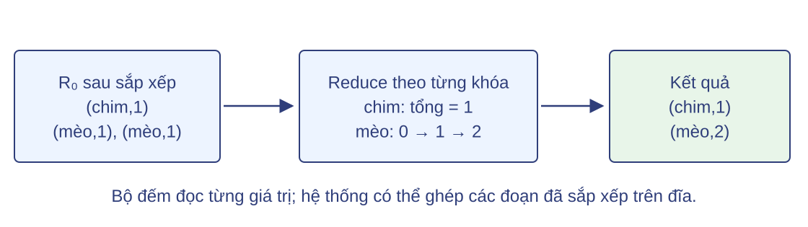
Với đếm từ, Reduce chỉ cần một biến tổng cho khóa đang xử lý.
Lưu ý: nhóm đầy đủ về mặt logic không đòi giữ cả nhóm trong bộ nhớ.
Danh sách giá trị theo khóa trong đặc tả là đối tượng logic. Giao diện có thể cung cấp từng giá trị để hàm Reduce đọc lần lượt. Trong ví dụ, nhóm mèo có hai số 1; biến tổng đi từ 0 tới 1 rồi 2. Nếu dữ liệu trung gian không vừa bộ nhớ, hệ thống có thể dùng sắp xếp và ghép trên đĩa. Việc này có chi phí đọc/ghi, đã được tính trong pha tương ứng khi dùng mô hình thời gian toàn công việc. Không suy ra mọi hàm Reduce đều chỉ cần một biến hoặc mọi đầu ra được sắp thứ tự toàn cục. Nguồn: Dean–Ghemawat 3.1, trang 4; Apache Hadoop Tutorial, Shuffle/Sort.
Theo dõi trạng thái tác vụ
Đọc thêm
Tiến trình điều phối (Master) theo dõi mỗi tác vụ và máy thực thi nó.
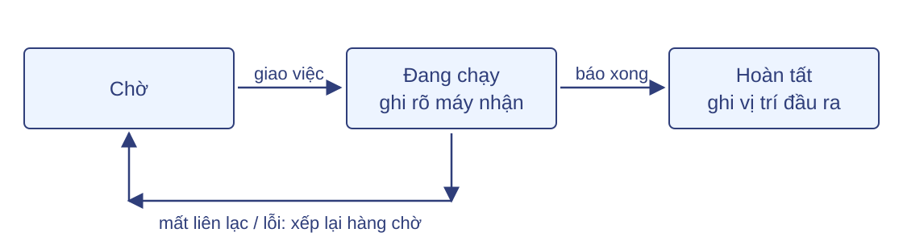
Máy thực thi báo tiến độ và kết quả; máy rảnh có thể nhận tác vụ tiếp theo.
Tiến trình điều phối giữ trạng thái tác vụ, nơi thực thi và vị trí đầu ra. Nó kiểm tra liên lạc định kỳ; khi một máy không trả lời trong thời hạn, tác vụ có thể được giao lại ở máy khác. Mất liên lạc quá hạn được coi là lỗi để xử lý, không nhất thiết máy đã hỏng vật lý. Hình thể hiện tác vụ đang chạy trở về chờ. Trường hợp Map đã hoàn tất nhưng mất tệp trung gian cần xét thêm nơi lưu dữ liệu. Master ở đây là vai trò điều phối MapReduce theo mô hình MMDS, khác NameNode quản lý tệp và khối HDFS. Nguồn: MMDS 2.2.5–2.2.6.
Nơi lưu dữ liệu và cách phục hồi
Đọc thêm
Dữ liệu Nơi lưu Khi mất máy lưu
Đầu vào HDFS có bản sao Đọc bản sao khác Đầu ra Map trung gian Đĩa cục bộ Chạy lại Map để tạo lại Đầu ra Reduce đã hoàn tất HDFS Giữ kết quả đã công bố
Giả thiết: hệ tệp dùng bản sao; còn ít nhất một bản sao HDFS truy cập được.
Đầu vào và đầu ra cuối được lưu trên hệ tệp phân tán; trung gian Map thường nằm ở đĩa cục bộ. Do đó hai tác vụ cùng báo hoàn tất chưa có cùng cách phục hồi: mất đầu ra Map có thể buộc tính lại, còn kết quả Reduce trên hệ tệp phân tán được giữ nếu bản sao vẫn truy cập được. Đây là mô hình lưu trữ của MMDS và MapReduce gốc, dùng HDFS làm ví dụ hệ tệp. Không khẳng định mọi hệ thống đều lưu trung gian giống nhau. Bảng này quyết định phần phải chạy lại khi máy chạy Map hoặc Reduce hỏng. Nguồn: MMDS 2.2.5–2.2.6; Dean–Ghemawat 3.3.
Phục hồi khi máy chạy Map hỏng
Đọc thêm
M₁ đã xong trên máy A, nhưng Reduce chưa lấy phần dữ liệu cần từ A.
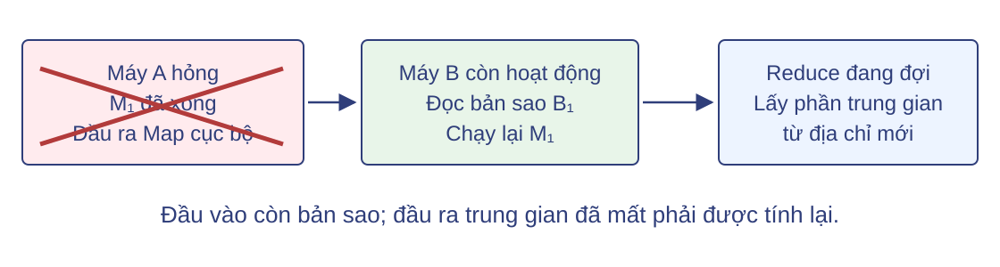
Tiến trình điều phối đưa M₁ về chờ, giao máy khác chạy lại và báo vị trí đầu ra mới.
Lưu ý: Map đã xong vẫn phải làm lại nếu đầu ra cục bộ không còn truy cập được.
M1 đã xử lý đầu vào nhưng sản phẩm của nó nằm trên đĩa cục bộ máy A. Khi A không truy cập được, Reduce chưa lấy phần cần thiết không thể tiếp tục bằng địa chỉ cũ. Hệ thống giao lại M1 cho B, đọc một bản sao đầu vào và tạo đầu ra trung gian mới. Tiến trình điều phối báo vị trí mới cho Reduce. Với hàm xác định, Reduce đã đọc đủ phần cũ không cần đọc lần nữa chỉ vì Map được chạy lại; Reduce đã hoàn tất cũng không bị buộc chạy lại trong tình huống này. Nguồn: MMDS 2.2.6, trang 30; Dean–Ghemawat 3.3.
Phục hồi khi máy chạy Reduce hỏng
Đọc thêm
R₀ chưa hoàn tất; R₁ đã công bố kết quả O₁ lên HDFS.
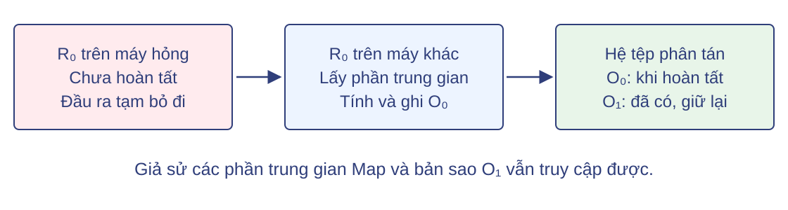
R₀ mới lấy lại các phần trung gian và tính Reduce lại; chưa cần chạy lại các Map.
Khi máy chạy R0 hỏng giữa chừng, phần kết quả tạm chưa được chấp nhận phải bỏ. R0 được thực thi lại ở máy khác: nó lấy lại các phần trung gian và chạy lại phép tính Reduce. Vì đầu ra Map trong ví dụ còn truy cập được, các Map không phải chạy lại. O1 của R1 đã hoàn tất nằm trên HDFS và có bản sao, nên được giữ. Chỉ đầu ra của lần thực thi hoàn tất qua cơ chế công bố kết quả được chấp nhận. Nếu đồng thời mất đầu ra Map cần dùng, hệ thống phải tạo lại phần đó trước. Nguồn: MMDS 2.2.6; Dean–Ghemawat 3.3.
Nhiều lần thực thi của một tác vụ
Đọc thêm
Tình huống Cách xử lý
Lỗi hoặc mất liên lạc Giao lại tác vụ trên máy khác Một tác vụ chạy quá chậm Có thể chạy thêm một bản dự phòng
Kết luận: mỗi tác vụ chỉ một kết quả được chấp nhận.
Giả thiết: hàm xác định, đầu vào không đổi.
Chạy lại sau lỗi và chạy dự phòng để giảm thời gian chờ là hai lý do khác nhau để cùng tác vụ có nhiều lần thực thi. Các bản dự phòng có thể chạy đồng thời, vì vậy không bảo đảm mã người dùng chỉ được thực thi một lần. Hệ thống dùng nhận diện tác vụ và cơ chế công bố đầu ra để không tính hai bản kết quả như hai đóng góp độc lập. Mỗi tác vụ logic có một mã, mỗi lần thực thi có mã riêng. Hàm xác định giúp các lần chạy từ cùng đầu vào cho cùng kết quả. Cam kết đầu ra không tự áp dụng cho tác động bên ngoài như gửi thư hoặc ghi tùy ý vào dịch vụ khác. Nguồn: Dean–Ghemawat 3.3 và 3.6.
Phạm vi chống chịu lỗi
Đọc thêm
Sự cố Khả năng phục hồi
Một máy thực thi hỏng Làm lại tác vụ hoặc đầu ra trung gian bị mất Một rack không truy cập được Dùng bản sao ở rack khác và giao lại tác vụ Tiến trình điều phối hỏng (mô hình MMDS) Công việc phải được khởi động lại
Giả thiết: đầu vào còn đọc được và có máy thay thế.
Phục hồi phụ thuộc tài nguyên và dữ liệu còn lại; chạy lại không tự sửa lỗi chương trình lặp lại trên cùng dữ liệu. Bản sao ở các rack khác nhau giúp tránh mất toàn bộ một khối khi một rack hỏng, nhưng không bảo đảm sống sót khi tất cả bản sao đều mất. Mô hình MMDS giả định một tiến trình điều phối (Master); nếu nó hỏng, công việc phải khởi động lại. Không dùng kết luận này như mô tả cố định của mọi phiên bản Hadoop, vì hệ thống hiện đại có các chính sách điều phối và phục hồi khác. Mạch thực hành chỉ rõ chế độ chạy để không nhầm một lần chạy cục bộ với cụm chịu lỗi. Nguồn: MMDS 2.1 và 2.2.6; Dean–Ghemawat 3.3.
Câu hỏi về phục hồi khi máy hỏng
Đọc thêm
Câu hỏi: trên ví dụ hai Map, hai Reduce.
R₀ và R₁ lần lượt lấy phần nào từ M₁ và M₂? M₁ xong trên A; A hỏng trước khi R₀ lấy dữ liệu. Phần nào phải tính lại? R₁ đã công bố O₁ rồi máy chạy R₁ hỏng; HDFS còn bản sao O₁. Có cần chạy lại R₁? R0 lấy phần 0 của M1 và M2, gồm hai cặp mèo và một cặp chim. R1 lấy phần 1 của hai Map, gồm hai cặp chó. Khi A hỏng, đầu ra cục bộ của M1 không truy cập được nên M1 phải được chạy lại từ bản sao đầu vào; sau đó R0 lấy dữ liệu ở vị trí mới. R1 đã hoàn tất không cần chạy lại khi O1 còn trên HDFS. Các câu trả lời phải viện dẫn vị trí dữ liệu và trạng thái công bố, không chỉ nói chung là hệ thống có bản sao. Mạch thực hành dùng Hadoop để thực thi mã Python và kiểm tra kết quả đếm từ.
Nguồn: tổng hợp MMDS 2.2.5–2.2.6; bài báo MapReduce mục 3.3; http://www.mmds.org.
6. Thực hành Hadoop với Docker ComposeMuốn chạy đếm từ trên cụm thật, phải dựng cụm Hadoop, viết Map, Reduce bằng Python và đối chiếu kết quả.
Docker Compose · HDFS · Hadoop Streaming · Bộ đếm
Mô hình MapReduce và lần chạy tay bài đếm từ đã cho kết quả chim 1, chó 2, mèo 2. Cụm sáu container gồm NameNode, hai DataNode, ResourceManager và hai NodeManager được dựng trên một máy; hai văn bản được đưa lên HDFS; hàm Map, Reduce và Combine viết bằng Python chạy qua Hadoop Streaming. Kết quả và các bộ đếm của công việc được đối chiếu với phép tính tay, làm căn cứ cho quy tắc chọn khóa và giá trị.
Mục đích và chuẩn bị thực hành
Thực hành
Mục đích Chạy bài đếm từ trên cụm Hadoop 6 container, một máy. Kết quả mong đợi chim 1 · chó 2 · mèo 2, khớp phép tính tay. Chuẩn bị Cài Docker trước lớp; mạch 5 là Đọc thêm, không tiên quyết.
Bộ mã: Hướng dẫn thực hành · Tải mã Docker Compose .
Mạch 2 xây dựng mô hình MapReduce, mạch 4 tính chi phí của nó; bài thực hành đưa mô hình vào một chương trình chạy thật. Cụm Hadoop nhỏ được dựng bằng Docker Compose trên một máy; hàm Map và Reduce viết bằng Python được nộp qua Hadoop Streaming, rồi kết quả được đối chiếu với phép đếm tay ở mạch 2. Mạch 5 về hệ thống thực thi là Đọc thêm, không là tiên quyết. Toàn bộ mã nằm trong examples/lec-02/hadoop-compose; sinh viên tải ZIP và cài Docker trước buổi học.
Nguồn: Apache Hadoop 3.4.2; tài liệu Docker Compose chính thức.
Cụm Hadoop trên một máy
Thực hành
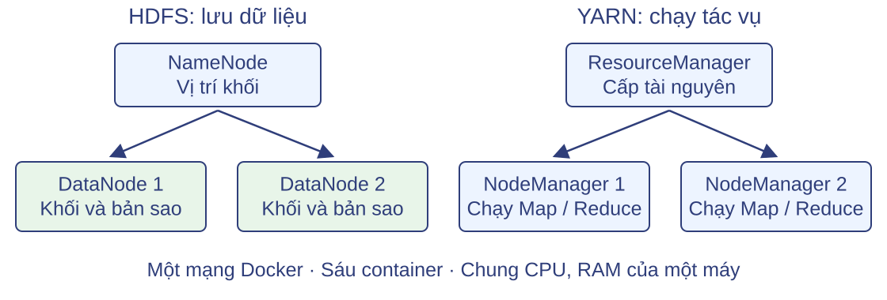
NameNode lưu vị trí khối; 2 DataNode lưu khối và bản sao.
Cụm gồm 6 Docker container trên một mạng bridge: NameNode, 2 DataNode, ResourceManager, 2 NodeManager. NameNode quản lý không gian tên và vị trí khối; DataNode giữ khối với replication 2. ResourceManager điều phối tài nguyên YARN; NodeManager chạy các tiến trình MapReduce. Cần phân biệt hai loại container: container Docker là tiến trình cô lập trên máy host, còn container YARN là đơn vị tài nguyên mà NodeManager cấp cho ApplicationMaster, Map hoặc Reduce; số container YARN thay đổi theo công việc. Hai DataNode và hai NodeManager là các container khác nhau trên cùng một host, không phải hai máy vật lý.
Nguồn: Apache Hadoop, docker-compose mẫu chính thức; compose.yaml của lab.
Khởi động bằng Docker Compose
Thực hành
Cài Docker Engine/Desktop và Compose plugin trước; giải nén bộ mã rồi vào thư mục lab.
cd hadoop-compose
docker compose pull
docker compose up -d
docker compose pspull tải image apache/hadoop:3.4.2-lean từ Docker Hub;up -d tạo 6 container nền; ps liệt kê trạng thái.
Ba lệnh theo thứ tự: pull tải image đã công bố về máy; compose.yaml cố định phiên bản bằng mã băm của image; up -d tạo và khởi động 6 container ở chế độ nền theo compose.yaml; ps cho thấy container nào đang chạy. Không cần cài Java hay Hadoop trên máy local vì mọi thứ nằm trong image. Thời gian chờ cụm sẵn sàng phụ thuộc máy.
Nguồn: Docker Hub apache/hadoop; tài liệu Docker Compose chính thức.
Kiểm tra cụm đã sẵn sàng
Thực hành
docker compose exec namenode hdfs dfsadmin -report
docker compose exec namenode yarn node -listDấu hiệu sẵn sàng: 2 DataNode ở trạng thái Live ,RUNNING .
Giao diện web của HDFS ở 127.0.0.1:19870, của YARN ở 127.0.0.1:18088.
dfsadmin -report hỏi NameNode về các DataNode: cần thấy đúng 2 node Live. yarn node -list hỏi ResourceManager: cần thấy 2 NodeManager RUNNING. Container đang chạy chưa đủ; daemon có thể đã khởi động nhưng chưa đăng ký với NameNode hoặc ResourceManager, nên phải kiểm tra bằng hai lệnh này trước khi nộp công việc. Hai giao diện web cũng xác nhận cùng thông tin: 19870 cho HDFS (tab Datanodes), 18088 cho YARN (mục Nodes). Nếu một node chưa lên, chờ vài giây rồi chạy lại lệnh kiểm tra.
Nguồn: Apache Hadoop 3.4.2, HDFS Commands và YARN Commands; compose.yaml của bộ thực hành.
Hai văn bản trên HDFS
Thực hành
d1.txtmèo chó mèo d2.txtchó chim
Trong cấu hình mẫu: hai tệp → hai Map. Hai bản sao không làm tăng số từ.
Script run-job.sh tự đưa data/*.txt lên HDFS bằng hdfs dfs -put.
Đây chính là hai văn bản đã đếm thủ công ở mạch 2, nên kết quả mong đợi đã biết: chim 1, chó 2, mèo 2. Mapper tách theo whitespace và giữ nguyên chữ hoa, dấu câu; giới hạn được ghi rõ trong README. Mỗi tệp tạo ít nhất một phần đầu vào; ngưỡng split.minsize 128 MiB giữ mỗi tệp nhỏ trong một phần, tức 2 Map. Replication 2 tạo bản sao khối trên cả hai DataNode nhưng chỉ phục vụ độ bền và vị trí đọc, không làm tăng số lần đếm. Script tạo thư mục đầu vào riêng cho mỗi lần chạy rồi đưa hai tệp lên HDFS.
Nguồn: run-job.sh của bộ thực hành; Apache Hadoop 3.4.2, HDFS Commands.
Hàm Map bằng Python
Thực hành
import sys
# Mỗi từ phân cách bởi khoảng trắng đóng góp một lần xuất hiện.
for line in sys.stdin:
for word in line.split():
print(f"{word}\t1")Đọc từng dòng từ stdin; với mỗi từ in word TAB 1 ra stdout.
Tệp đầy đủ là mapper.py trong bộ thực hành.
Toàn bộ mapper là 6 dòng này. Hadoop Streaming cấp từng dòng văn bản cho tiến trình Python qua stdin; mapper không nhận cả tệp và không tự tải dữ liệu; việc chia phần đầu vào và cấp bản ghi là việc của hệ thống. Với mỗi từ, chương trình in một cặp khóa-giá trị word TAB 1 ra stdout theo giao thức Streaming. Đây đúng là hàm Map của mô hình mạch 2: mỗi lần xuất hiện đóng góp một cặp. Đầu ra của mapper là đầu vào của giao diện Streaming giữa Python và Hadoop.
Nguồn: mapper.py của bộ thực hành; Apache Hadoop Streaming 3.4.2.
Giao diện giữa Python và Hadoop
Thực hành
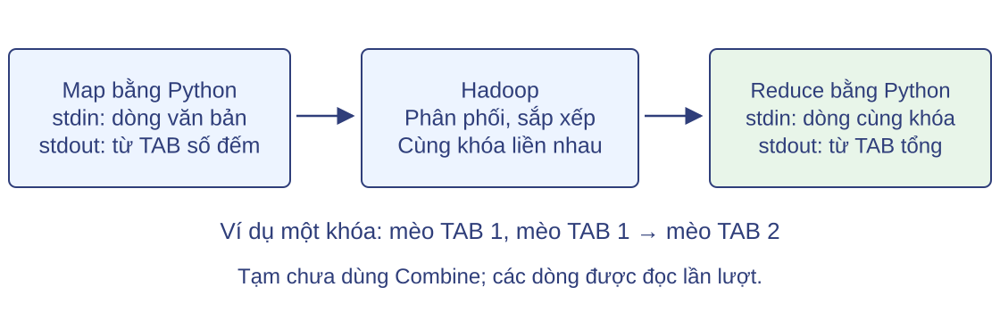
Mapper in mèo TAB 1, mèo TAB 1…; Hadoop gom các dòng cùng khóa liền nhau rồi đưa vào reducer.
Streaming quy hàm Map/Reduce về văn bản qua ba kênh: stdin của mapper nhận từng dòng; stdout của mapper phát các cặp word TAB count; Hadoop phân phối theo khóa và sắp xếp, rồi đưa các dòng cùng khóa liền nhau vào stdin của reducer. Dạng hàm Reduce trong MMDS nhận danh sách giá trị của một khóa; ở đây danh sách đó được hiện thực bằng các dòng liền kề; Hadoop lo việc chuyển và gom, chương trình chỉ đọc tuần tự. Với bài đếm từ, reducer chỉ cần giữ tổng của nhóm đang đọc.
Nguồn: Apache Hadoop Streaming 3.4.2; MMDS §2.2.
Hàm Reduce và Combine bằng Python
Thực hành
import sys
from itertools import groupby
# Hadoop đưa các dòng cùng khóa liền nhau; đọc nhóm lần lượt.
pairs = (line.rstrip("\n").split("\t", 1) for line in sys.stdin)
for word, group in groupby(pairs, key=lambda pair: pair[0]):
total = sum(int(value) for _, value in group)
print(f"{word}\t{total}")Cộng giá trị trong nhóm; đầu vào và đầu ra cùng dạng word TAB count.
Tệp đầy đủ là reducer.py trong bộ thực hành.
groupby gom các dòng liền nhau cùng khóa; tổng được cộng lần lượt qua generator, không tạo danh sách cả nhóm trong RAM. Phép cộng có tính kết hợp, giao hoán và đầu vào/đầu ra cùng kiểu (word, count), nên cùng tệp này dùng được làm combiner: chạy trên đầu ra Map để giảm dữ liệu truyền qua shuffle mà kết quả cuối không đổi. Combiner là tùy chọn; Hadoop có thể chạy nó nhiều lần hoặc không chạy, kết quả được bảo toàn nhờ tính kết hợp, giao hoán và kiểu dữ liệu phù hợp. Dòng cuối tệp hoặc input rỗng: khi stdin kết thúc, nhóm cuối vẫn được xử lý rồi vòng lặp dừng tự nhiên.
Nguồn: reducer.py của bộ thực hành; Apache Hadoop Streaming 3.4.2.
Nộp công việc MapReduce
Thực hành
docker compose exec -T namenode bash /work/run-job.shBốn dòng khai báo trong script (cùng một lệnh hadoop jar):-files /work/mapper.py,/work/reducer.py · -mapper 'python3 mapper.py'-combiner 'python3 reducer.py' · -reducer 'python3 reducer.py'
Tệp run-job.sh tạo thư mục đầu vào, đưa tệp lên HDFS và chọn thư mục đầu ra mới.
Một lệnh duy nhất nộp công việc; bốn dòng trên là các tham số của cùng lệnh hadoop jar Streaming trong run-job.sh, không phải các lệnh độc lập. Thứ tự script làm việc: chờ thoát safe mode, kiểm tra 2 DataNode Live và 2 NodeManager RUNNING, tạo thư mục input mới rồi put hai tệp lên HDFS, chọn đường dẫn output chưa tồn tại (mỗi lần chạy một tên riêng, không mkdir output trước khi nộp), sau đó mới nộp lệnh hadoop jar với -D và -files đặt trước input/output. -files gửi mapper.py và reducer.py tới các NodeManager, nên hệ thống phân phối mã đến nơi chạy tác vụ; không cần đăng nhập từng worker để chép mã. Script cũng đặt mapreduce.job.reduces=2 và split.minsize 128 MiB. ApplicationMaster do ResourceManager cấp tài nguyên sẽ lo phần còn lại.
Nguồn: Apache Hadoop Streaming 3.4.2; run-job.sh của bộ thực hành.
Đối chiếu kết quả
Thực hành
chim 1
chó 2
mèo 2Script in đường dẫn đầu ra; ghép các tệp output/part-* thu được đủ ba cặp kết quả.
Trạng thái công việc trên YARN là SUCCEEDED (127.0.0.1:18088).
Đây là đầu ra in bởi run-job.sh từ một lần chạy thật: chim 1, chó 2, mèo 2; khớp phép đếm tay của ví dụ đếm từ ở mạch mô hình. Với 2 Reduce, HDFS output chứa hai tệp part-*; mỗi tệp gồm các khóa được giao cho Reduce đó, gộp lại cho kết quả toàn bài. Trong lần chạy mẫu, một tệp có ba khóa và một tệp rỗng: hàm băm mặc định khác quy tắc phân phối minh họa trước đó. Hai Reduce không bảo đảm tải cân bằng. Thứ tự các dòng trong một tệp là thứ tự sau sắp xếp trong phạm vi Reduce; với nhiều Reduce, thứ tự toàn cục của các khóa không được bảo đảm, nên thứ tự tệp không phải bằng chứng. Trạng thái SUCCEEDED xác nhận công việc hoàn tất trên YARN.
Nguồn: run-job.sh của bộ thực hành; Apache Hadoop 3.4.2.
Quan sát các bộ đếm
Thực hành
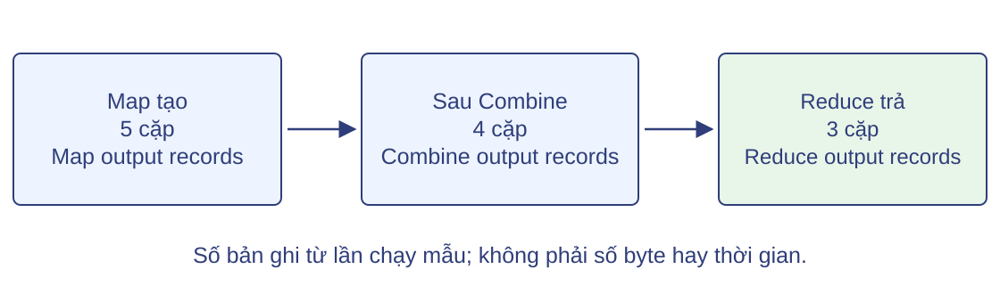
Lần chạy kiểm thử: 5 cặp ra từ Map, 4 cặp sau Combine, 3 cặp ra từ Reduce.
Hadoop đếm số bản ghi ở từng pha. Trong lần chạy kiểm thử này: 2 bản ghi input, 5 cặp đầu ra Map, 4 cặp sau Combine, 3 nhóm vào Reduce, 3 cặp đầu ra với 3 khóa. Combine giảm 5 xuống 4 vì hai cặp mèo liền nhau được gộp; số lần Combine chạy không cố định giữa các lần nộp công việc, nên 5→4 không phải bất biến. Bộ đếm đo số cặp và số byte, không phải thời gian; không suy ra Combine làm giảm 20% thời gian chạy hay con số tương tự. Đây là công cụ kiểm chứng từng pha của mô hình đã học.
Nguồn: bộ đếm trong log lệnh Hadoop Streaming, lần kiểm thử của bộ mã.
Bộ đếm tính số cặp, không cho biết thời gian chạy giảm.
Câu hỏi về lần chạy trên Hadoop
Thực hành
Câu hỏi: giải thích kết quả và cách kiểm chứng.
1 Xóa khai báo Combiner trong script: kết quả đếm có đổi không? 2 Với replication 2, vì sao tổng số từ đếm được vẫn là 5 chứ không phải 10? 3 Bằng chứng nào cho thấy công việc đã chạy trên YARN và cho kết quả đúng?
Lời giải: (1) Không; phép cộng kết hợp và giao hoán, Combine chỉ tối ưu truyền dữ liệu, kết quả cuối như nhau. (2) Replication là cơ chế lưu trữ tạo bản sao khối để đọc và độ bền; mỗi từ vẫn chỉ được một Map xử lý một lần, nên tổng là 5. (3) Hai node đăng ký chưa đủ; cần công việc ở trạng thái SUCCEEDED trên YARN, bộ đếm các pha hợp lệ, và output/part-* cho đúng chim 1, chó 2, mèo 2. Ba câu này ôn lại mô hình mạch 2 và thông tin HDFS vừa có trong mạch 6; các kết quả được đặt cạnh giả thiết ở phần tổng kết.
Nguồn: bài đếm từ ở phần mô hình; Apache Hadoop Streaming 3.4.2.
7. Tổng kết và bài tập vận dụngMuốn dùng MapReduce cho bài toán khác, phải chọn khóa và thông tin giữ lại theo đầu ra cần tính.
Kết quả và giả thiết · Thuật toán và chi phí · Câu hỏi tự kiểm tra · MMDS Bài 2.3.1
Ba bài toán gộp, mô hình chi phí và lần chạy Hadoop đã cho các kết quả cần thu hồi. Cụm tổng kết đặt các kết quả cạnh giả thiết không được bỏ, so các thuật toán theo đầu vào, bảo đảm và chi phí, trả lời vấn đề trung tâm và tự kiểm tra; cụm bài tập vận dụng quy tắc chọn khóa và giá trị cho ba bài MMDS 2.3.1. Không có khái niệm mới.
Kết quả và giả thiết không được bỏ
Kết quả Giả thiết không được bỏ Công thức hoặc thuật toán
Một công việc MapReduce hàm xác định, dừng; Reduce không phụ thuộc thứ tự Map, nhóm \(L_k\), Reduce Combine gộp kết hợp, giao hoán; trạng thái đủ, như \((s,c)\) dạng khóa–giá trị như Reduce; chia chỉ ở Reduce Chi phí đầu vào không tính đầu ra cuối \(C=I+H\) Thời gian công việc pha nối tiếp; pha chờ máy chậm nhất \({T_P=\sum T_{\text{pha}}}\), \({T_{\text{pha}}=\max_m t_m}\) Truyền, tăng tốc băng thông ổn định; cùng phạm vi đo \({T\approx\lambda+V/B}\); \({S_P=T_1/T_P}\)
Bỏ từng giả thiết đều có phản ví dụ đã gặp. Dùng trung bình trực tiếp làm Combine cho 6 thay vì 5, vì phép lấy trung bình không kết hợp. Reduce phụ thuộc thứ tự giá trị cho kết quả không ổn định, vì hệ thống không bảo đảm thứ tự trong \(L_k\). Cộng thời gian Map của mọi máy thay vì lấy máy chậm nhất cho \(T_{\text{Map}}=10\) giây thay vì 5 giây ở câu hỏi chi phí. Quy ước chi phí khác của trang chiếu MMDS tính cả đầu ra cuối, cho \(I+2H+O\) thay vì \(I+H\). Băng thông dùng chung cho cận \(T\ge V/B\) thay vì thời gian của một thông điệp riêng.
Nguồn: MMDS §§2.2–2.3, §2.5; Cornell CS5220.
Thuật toán, bảo đảm và chi phí
Thuật toán Đầu vào Bảo đảm Chi phí trên ví dụ
Đếm từ (khóa: từ) \(n\) văn bản mỗi từ một cặp \((w,c(w))\) 5 cặp × 16 byte = 80 byte; Combine: 4 cặp, 64 byte Nhân ma trận–véc tơ (khóa: hàng \(i\)) bản ghi \((i,j,a_{ij})\); \(v\) vừa bộ nhớ \(y=Av\) 16 cặp Map, 8 sau Combine Đếm từ phân biệt (khóa: từ, rồi \(g\)) \(n\) văn bản kết quả \(D\) 5 cặp, 4 sau Combine; rồi 3 cặp Trung bình (trạng thái \((s,c)\)) \(a_1,\ldots,a_n\), \(n\geq1\) \(\mu=\sum s/\sum c\) (tổng chia số lượng) 3 cặp Map, 2 sau Combine Cộng \(n\) số trên \(P\) máy \(n\ge P\) đúng tổng \(W_P=n-1\); 16 số: \(6\tau\) so với \(15\tau\)
Với ma trận A p×q và véc tơ v có q phần tử, Map xử lý khối ma trận, tạo tích a_ij v_j và dùng chỉ số hàng i làm khóa; Reduce cộng các tích cùng hàng, Combine có thể cộng trước theo mô hình số học đã nêu. Với số giá trị phân biệt, dùng chính giá trị làm khóa để bỏ trùng, rồi một vòng tiếp theo đếm các khóa còn lại. Với trung bình, trạng thái \((s,c)\) gồm tổng và số phần tử: gộp bằng cách cộng từng thành phần, chỉ chia tổng cho số lượng ở bước cuối. Cả ba thiết kế đều bắt đầu từ đầu ra cần tính để chọn khóa và trạng thái trung gian.
Cột chi phí chỉ chép số đã có: số cặp trung gian trước và sau Combine trên các vết chạy của ba ví dụ (16 và 8 cặp ở ma trận \(4\times4\); 5 và 4 cặp của công việc 1, 3 cặp của công việc 2 ở đếm từ phân biệt; 3 và 2 cặp ở trung bình của 2, 4, 9), 80 và 64 byte của ví dụ hai văn bản với 16 byte mỗi cặp, \(W_P=n-1\) và \(6\tau\) so với \(15\tau\) khi cộng 16 số trên bốn máy. Số cặp trung gian quyết định phần \(H\) của chi phí \(C=I+H\); bài không thay số byte cho ba ví dụ của mạch ví dụ.
Nguồn: MMDS §§2.2–2.3, §2.5.
Câu trả lời cho vấn đề trung tâm
Map, nhóm theo khóa, Reduce cho chim 1, chó 2, mèo 2; Reduce cộng nên không phụ thuộc thứ tự.
Giá trị giữ đủ thông tin: \(y=(9,8,9,11)^T\), \(D=3\), \(\mu=5\); trung bình trực tiếp cho 6.
Ví dụ giả định bốn pha: \(T_4=10\) s, gồm điều phối 1 s, truyền và nhóm 3 s; \(S_4=2{,}4<4\); Combine: 80 còn 64 byte.
Hadoop: 5 cặp Map, 4 cặp sau Combine, 3 cặp Reduce, khớp chạy tay.
Kết luận: chọn khóa theo đầu ra, giữ đủ thông tin để gộp; truyền là chi phí phải đo.
Dòng Map, nhóm, Reduce lấy từ vết chạy đếm từ; dòng giá trị giữ đủ thông tin từ ba ví dụ gộp (nhân ma trận 4×4, đếm từ phân biệt, trung bình của 2, 4, 9); dòng thời gian lấy từ ví dụ bốn pha 1 + 4 + 3 + 2 giây trên bốn máy và mức tăng tốc 24/10; con số \(6\tau\) của ví dụ cộng 16 số là một ví dụ khác, chỉ có hai pha; các thời gian là dữ kiện giả định, không phải số đo; dòng cuối là bộ đếm của một lần chạy kiểm thử. Với phần đọc thêm về hệ thống thực thi: máy Map hỏng thì chạy lại Map mất đầu ra, kết quả Reduce đã công bố được giữ. Quy mô lịch sử của Google ở mạch 1 không được tính lại vì bài không có mô hình chi phí cho kho đó. Bài 03 dùng lại phép nhân ma trận–véc tơ cho phép lặp PageRank.
Nguồn: các trang ví dụ, chi phí và thực hành của bài; MMDS §§2.2–2.5.
Câu hỏi tự kiểm tra
Câu hỏi: trả lời và nêu kết quả đã dùng.
Phân biệt việc của Map, Reduce và hệ thống trong đếm từ.
Nêu điều kiện để Combine giữ nguyên kết quả; cho phản ví dụ.
Tăng số máy có luôn giảm thời gian chạy?
Nêu bằng chứng từ bài thực hành rằng công việc chạy đúng.
Lời giải.
Câu 1: Map tạo cặp (từ, 1) cho mỗi lần xuất hiện; Reduce cộng số đếm cùng từ; hệ thống chia đầu vào, phân phối các cặp theo khóa, nhóm thành \((w,L_w)\), lập lịch và chạy lại tác vụ lỗi. Câu 2: với các phép gộp đã học, cần tính kết hợp, giao hoán, kiểu trạng thái tương thích và bảo toàn kết quả Reduce khi thay một nhóm bằng trạng thái đã gộp; điều này phải đúng khi bỏ qua Combine hoặc áp dụng nhiều lần. Câu 3: tăng máy chưa chắc giảm thời gian vì còn chi phí truyền, điều phối, tải lệch và băng thông dùng chung; so sánh T₁ và T_P cho cùng bài toán, dữ liệu và phạm vi đo, tăng tốc là S_P = T₁/T_P. Câu 4: kiểm tra trạng thái SUCCEEDED trên YARN, bộ đếm tác vụ và các cặp kết quả đúng; docker compose ps chỉ cho biết container đang chạy.
Kết quả đã dùng: câu 1, các trang hàm Map, Reduce và phân phối tác vụ; câu 2, trang Combine và phản ví dụ trung bình trực tiếp; câu 3, các trang thời gian cả công việc và mức tăng tốc; câu 4, các trang đối chiếu kết quả và bộ đếm.
Nguồn: MMDS §2.2; bài thực hành của mạch 6.
Nguồn và tài liệu đọc
Nguồn: Leskovec, Rajaraman, Ullman (2020), Mining of Massive Datasets , ấn bản 3, Chương 2, §§2.1–2.3, §2.5, tr.21–56.
Sách và trang chiếu của các tác giả: http://www.mmds.org .
Nguồn: Dean, Ghemawat (2004), MapReduce, OSDI, §§2–3; Manning, Raghavan, Schütze (2008), Introduction to Information Retrieval , §6.3.
Nguồn: Cornell CS5220 (2020); Apache Hadoop 3.4.2: HDFS Architecture, MapReduce Tutorial, Hadoop Streaming.
Bài 03 dùng phép nhân ma trận–véc tơ của bài này cho phép lặp PageRank.
Mạch 1 dựa trên MMDS §2.1; mạch 2 trên §§2.2.1–2.2.4; mạch 3 trên §2.3.1 và Bài 2.3.1(b, d); mạch 4 trên §§2.5.1–2.5.2; mạch 5 trên §§2.2.5–2.2.6; bài tập là Bài 2.3.1(a, b, d), tr.40. Số liệu Google ở mạch 1 lấy từ Google (2004), Pike và cộng sự (2005, tr.26–27), Brin, Page (1998, §2.2); dữ kiện của mạch chi phí là giả định. Câu nối sang Bài 03 dựa trên đề cương học phần: Bài 03 dùng lại MapReduce khi tính PageRank trên đồ thị lớn.
Bài tập vận dụng
Nhu cầu: áp quy tắc chọn khóa và giá trị cho ba bài của MMDS, Bài 2.3.1.
Mỗi bài nộp đặc tả Map, Combine, Reduce và lập luận tính đúng.
(a) Số nguyên lớn nhất trong một tệp rất lớn. (b) Trung bình cộng của mọi số nguyên trong tệp. (d) Số giá trị phân biệt trong tệp. Ba bài kiểm việc thiết kế khóa, chọn trạng thái gộp và chứng minh tính đúng. Phần (c) của sách bị lược vì danh sách giá trị không trùng là bước trung gian đã học ở bài đếm từ phân biệt. Lời giải và hướng dẫn chấm nằm trong ghi chú diễn giả của từng bài.
Nguồn: MMDS, Bài 2.3.1, tr.40.
Bài tập: số nguyên lớn nhất
Tệp rất lớn chứa các số nguyên; không cần khóa ở đầu ra.
Đầu ra là số nguyên lớn nhất trong toàn bộ tệp.
Câu hỏi: thiết kế thuật toán MapReduce.
Nộp đặc tả Map, Combine, Reduce và lập luận tính đúng.
Nguồn: MMDS, Bài 2.3.1(a), tr.40.
Bài tập kiểm việc chọn khóa và trạng thái gộp. Gợi ý: dùng một khóa chung; phép lấy giá trị lớn hơn có tính kết hợp và giao hoán.
Lời giải: Gọi n là số lượng số nguyên trong tệp và B₁,…,B_m là các khối không rỗng tạo thành một phân hoạch đầu vào. Với mỗi khối B_j, Map quét các phần tử, giữ số lớn nhất b_j rồi yield(*, b_j). Dấu * là khóa chung, đóng vai \(g\) ở mạch ví dụ. Combine và Reduce lấy max của các giá trị nhận được; Reduce trả số lớn nhất và có thể bỏ khóa đầu ra. Chứng minh: sau khi Map đọc một tiền tố của khối, biến đang giữ bằng max của tiền tố đó. Vì mỗi phần tử thuộc đúng một khối, max của cả tệp bằng max của các max khối. Phép max kết hợp và giao hoán, nên gộp cục bộ không đổi kết quả. Mỗi tác vụ dừng sau một lượt quét hữu hạn và chỉ giữ một giá trị. Với mô hình mỗi số nguyên chiếm một ô nhớ và so sánh có chi phí hằng số, công việc quét là Θ(n). Map gộp trong khối nên chỉ tạo m cặp trung gian. Tệp rỗng không có giá trị lớn nhất: cần báo không có giá trị hoặc nêu miền xác định không rỗng; không mặc định trả 0 vì dữ liệu có thể toàn số âm. Nguồn đề: MMDS, bài 2.3.1(a), trang 40.
Bài tập: trung bình cộng của tệp số nguyên
Tệp rất lớn chứa các số nguyên; không cần khóa ở đầu ra.
Đầu ra là trung bình cộng của mọi số trong tệp.
Câu hỏi: thiết kế thuật toán MapReduce.
Nộp đặc tả Map, Combine, Reduce và lập luận tính đúng.
Nguồn: MMDS, Bài 2.3.1(b), tr.40.
Bài tập kiểm việc chọn khóa và trạng thái gộp. Gợi ý: giữ trạng thái (tổng, số lượng); chỉ chia ở bước cuối.
Lời giải: Gọi n là số phần tử và B₁,…,B_m là các khối không rỗng, rời nhau, phủ toàn bộ tệp. Map trên B_j tính s_j là tổng và c_j là số phần tử, rồi yield(*, (s_j, c_j)). Combine cộng từng thành phần của các trạng thái: (S₁,C₁) và (S₂,C₂) thành (S₁+S₂,C₁+C₂). Reduce gộp tất cả trạng thái rồi trả S/C; không dùng phép chia này trong Combine. Bất biến của mỗi trạng thái là tổng và số phần tử của đúng phần dữ liệu nó đại diện. Các phần rời nhau nên khi gộp, cộng hai thành phần giữ bất biến. Cuối cùng S là tổng toàn tệp và C=n, do đó S/C là trung bình cần tìm. Các tác vụ quét hữu hạn và giữ hai biến tích lũy. Lập luận dùng số học chính xác; phép cộng dấu phẩy động trên máy có thể phụ thuộc thứ tự. Trong mô hình chi phí đơn vị cho phép cộng, công việc quét là Θ(n); Map gộp trong khối tạo m cặp trung gian. Nếu tệp rỗng thì C=0 và trung bình không xác định: không chia cho 0 hoặc tự quy ước trung bình bằng 0. Nguồn đề: MMDS, bài 2.3.1(b), trang 40.
Bài tập: số giá trị phân biệt
Tệp rất lớn chứa các số nguyên; không cần khóa ở đầu ra.
Đầu ra là số giá trị phân biệt trong tệp.
Câu hỏi: thiết kế thuật toán MapReduce.
Nộp đặc tả Map, Combine, Reduce và lập luận tính đúng.
Nguồn: MMDS, Bài 2.3.1(d), tr.40.
Bài tập kiểm việc chọn khóa và trạng thái gộp. Gợi ý: dùng giá trị làm khóa ở vòng 1 để bỏ trùng, rồi đếm ở vòng 2.
Lời giải: Gọi n là số nguyên đầu vào và D là số giá trị phân biệt. Đề bài không bắt buộc số vòng; lời giải dùng hai vòng. Vòng 1: Map trên một khối yield(x,1) cho mỗi số x. Combine tùy chọn và Reduce cùng thay một nhóm khóa x bằng đúng một cặp (x,1). Combine chỉ loại bản trùng cục bộ; Reduce bảo đảm mỗi giá trị phân biệt có đúng một bản ghi đầu ra toàn vòng. Vòng 2: Map đổi mỗi cặp (x,1) thành (*,1); Combine cộng cục bộ, Reduce cộng các giá trị để trả D. Chứng minh: tập khóa có mặt ở vòng 1 chính là tập giá trị đầu vào. Reduce tạo một bản ghi cho mỗi phần tử của tập đó; vòng 2 đếm số bản ghi, nên cho đúng lực lượng D. Các tác vụ đọc hết các dòng hữu hạn rồi dừng; Reduce vòng 1 chỉ cần ghi nhận khóa đang đọc, vòng 2 giữ một tổng. Khi đầu vào rỗng, D=0; chương trình chính phải trả 0 khi vòng 1 không có bản ghi. Vòng 1 tạo tối đa n cặp trung gian và D cặp đầu ra; vòng 2 tạo tối đa D cặp trung gian. Một Reduce giữ tập giá trị cũng là cách giải đúng, nhưng cần bộ nhớ Θ(D) ô nhớ. Nguồn đề: MMDS, bài 2.3.1(d), trang 40.